DISTINCTIO IV — DE DIVISIONE CAMPORUM INTER CONSORTES¶
Liber Divisionum Euclidis Latinitate Donatus et Ampliatus: Trigoni, Quadrilatera, Trapezia et Circuli
Fons Criticus: boncompagni:1862 (Scritti di Leonardo Pisano, Vol. II, pp. 110–148 · Cod. Urb. Lat. 292, fol. 67v–92v) · English Translation · Summary · GEOMETOR Notes
De Divisione Trigonorum ab Angulo vel a Puncto Dato in Latere¶
Versio Anglica: Dividing Triangles from a Vertex or Side Point (pp. 110–112) · Commentarius: Notae ad Librum Divisionum Euclidis

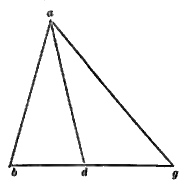
Explicit distinctio tertia, incipit quarta de diuisione camporum inter consortes.
QVARTAM siquidem distinctionem in partes quatuor diuidimus: in prima quarum triangulos: in secunda quadrilateros: in tertia multilateres: in quarta circulos, et eorum portiones diuidere docebimus.
Incipit pars prima de diuisione triangulorum.
CVM itaque triangulum aliquem in duas equas partes ab uno angulorum diuidere uis, ab ipso angulo super dimidium lateris subtendentis ipsi lineam protrahe; et habebis optatum. Verbi gratia: uolumus trigonum .abg. a puncto .a. in duo equa diuidere: diuidatur siquidem latus .bg. in duo equa super punctum .d.; et copuletur recta .ad.; dico siquidem, trigonum .abg. in duo equa trigona esse diuisum: sunt enim trigona .abd. et .adg. sibi inuicem equalia, cum sint super equales bases, et sub eadem altitudine, que est ductio catheti ab .a. in lineam .bg.: sunt enim trigona sibi inuicem sub eadem altitudine existentia, sicut bases in principio sexti libri habentur: quare est sicut .bd. ad .dg., ita trigonum .abd. ad trigonum .adg.: est enim basis .bd. equalis basi .dg.; quare trigona .abd. et .adg. sibi inuicem sunt equalia, ut prediximus; uel si protraxerimus cathetum ab .a. super lineam .bg., erunt utique cathetus ipse utriusque trigoni .abd. et .adg., equabitur multiplicationi dimidij eiusdem catheti in basem .bg.
f. 0118 · p. 111
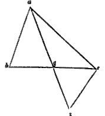


Nam ex multiplicatione dimidij catheti ipsius in bases .bd. et .dg., proueniunt embada trigonorum .abd. et .adg. Quare probatur, trigonum .abd. equalem esse trigono .adg.
TRIGONA unum angulum uni angulo equalem habentia proportionem habent compositam ex lateribus angulos continentibus equales. Ad cuius rei euidentiam sint trigona .abg. et .gez. equales habentia angulos, qui ad .g. Dico quidem, trigona .abg. et .gez. proportionem habere compositam ex his proportionibus, que sunt laterum continentium angulos equales, ex ea uidelicet quam habet latus .bg. ad latus .ge., et ex ea quam habet latus .ag. ad latus .gz.; quod sic probatur: recta .ae. copuletur; et eiciatur inter trigona .abg. et .gez. trigonus .age.; erit ergo proportio trigoni .abg. ad trigonum .gez. composita ex duabus proportionibus, scilicet ex ea quam habet trigonum .abg. ad trigonum .age., et ex proportione .age. trigoni ad trigonum .gez. Sed proportio trigoni .abg. ad trigonum .age. est sicut basis .bg. ad basem .ge., cum sint sub altitudine una; nec non et proportio trigoni .eag. ad trigonum .egz. est sicut latus .ag. ad latus .gz.; ergo proportio trigoni .abg. ad trigonum .gez. componitur ex proportionibus laterum .bg. ad .ge., et .ag. ad .gz., quod oportebat ostendere. Componitur etiam proportio trigoni .abg. ad trigonum .gez. ex proportionibus .bg. ad .gz., et .ag. ad .ge., cum latera .ag. et .bg. sint antecedentia, et latera .ge. et .gz. sint consequentia: et quia ut diximus in tractatu angulorum, proportionem compositam cadere ex facto antecedentium ad factum ex consequentibus, erit utique proportio trigoni .abg. ad trigonum .gez., sicut factum ex .bg. in .ag. ad factum ex .eg. in .gz.: quare si equalis fuerit multiplicatio lateris .eg. in latus .gz. multiplicationi laterum .bg. in .ga., equale erit trigonum .egz. trigono .abg.; et si minor minor, et si maior maior; et hoc uoluj demonstrare.
ET si a trigono recta protracta fuerit secans duo latera trigonj, que cum ipsis duobus lateribus faciant trigonum habentem angulum unum communem cum ipso trigono, erit proportio unius trigoni ad alium, sicut facta ex lateribus continentibus ipsum angulum. Ad cuius rei euidentiam. Esto trigonum .abc.; et in ipso protracta fuerit linea .de. secans latera .ca. et .cb. super puncta .ed. Dico, trigonum .abc. proportionem habere ad trigonum .dec., sicut factum ex .ac. in .cb. ad factum ex .dc. in .ce.; quod sic probatur: super latus .ac. applicabo trigonum .acf. equale trigono .dec.; et quia trigona .abc. et .afc. sub una sunt altitudine, est sicut .bc. ad .fc., ita trigonum .abc. ad trigonum .afc. Sed proportio .ac. ad .fc. est sicut factum ex .ac. in .cb. ad factum ex .ac. in .cf.; ergo proportio trigoni .abc. ad trigonum .afc. est sicut factum ex .ac. in .bc. ad factum ex .ac. in .cf. Et quia trigonum .dec. equale est trigono .acf., est proportio trigoni .acb. ad trigonum .dce. sicut factum ex .acb. in .acf.: et quia trigona .acf. et .dce. sibi inuicem sunt equalia, et habent unum angulum comunem; quare circa ipsum angulum comunia patiuntur latera; hoc est quod sunt mutue proportionis, ut in quinto decimo theoremate sexti libri EVCLIDIS habetur: ergo est sicut .ac. ad .dc., ita .ce. ad .cf.; quare factum ex .dc. in .ce. equatur facto ex .ac. in .cf.; ergo proportio trigoni .abc. ad trigonum .dec. est sicut factum ex .ac. in .cb. ad factum ex .dc. in .ce.; quod oportebat ostendere. ET si in aliquo laterum sit punctus datus, a quo lineam rectam protrahere uis diuidentem triangulum in duo equa, ut in trigono .bgd., in quo datus sit punctus .a. super latus .gd.; et sit primus
Preparatoria de Concursu Mediarum et Divisio Inter Tres Consortes¶
Versio Anglica: Concurrency of Medians & Centroid Division (pp. 112–120) · Commentarius: Notae ad Centrum Gravitatis D

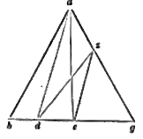
punctus .a. super dimidium .gd.; copulabo siquidem .a. cum .b., et erit trigonum .bgd. in duo trigona equalia diuisum a linea .ba., que sunt .bga. et .bad. super equas bases, et sub altitudine una; uel quia factum ex .bd. in .dg. duplum est facti ex .bd. in .da., duplus est triangulus .bgd. triangulo .bad., cum habeant unum angulum comune. Sed non sit datus punctus super dimidium alicuius laterum, ut in hoc alio trigono .abg., in quo datus sit punctus .d., qui sit propius puncto .b. Diuidam latus .bg. in duo equa super .e., et copulabo rectas .ad. et .ae.; et per punctum .e. protraham lineam .ez. equidistantem linee .ad., et copulabo rectam .dz. Dico quidem, trigonum .abg. in duo equa diuisum esse a linea .dz.; quod sic probatur: in equidistantes quidem .ad. et .ez.; et super basem .ad. sunt trigona .ade. et .adz. sibi inuicem equalia: comuniter addatur ei trigonum .abd., erunt duo trigona .abd. et .adz., hoc est quadrilaterum .abdz. equalia duobus trigonis .abd. et .ade., hoc est trigono .abe. Sed trigonum .abe. dimidium est trigoni .abg.; quare et quadrilaterum .abdz. dimidium est trigonj .abg.; reliquum uero, scilicet trigonum .zdg., est alia medietas trigonj .abg.: diuisum est ergo trigonum .abg. a puncto .d. per lineam .dz. in duas partes equales, ut oportebat facere. Et si secundum numerum punctum .z. inuenire desideras; scias quia que pars est .ed. ex .dg., eadem est .az. ex .ag., cum in trigono .adg. protracta sit .ez. equidistans lateri .ad.: quare multiplicabis .ed. per .ga.; et quod prouenerit diuides per .gd.; et quod exierit, erit .az. Verbi gratia: sit latus .ab. 13, et .bg. .14., et .ga. .15.; quare .ge., uel .eb. est .7.: et sit .de. duarum perticarum; quare .gd. erunt .9.; si multiplicauerimus ergo .ed. in .ga., scilicet .2. per 15., uenient .30; quibus diuisis per .gd., uenient 1/3 3 pro linea .az.; quibus extractis ex .ag., remanent 2/3 11 pro linea .gz.: quare si multiplicauerimus eam per .gd., qui est .9., uenient 105, scilicet dimidium multiplicationis .bg. in .ga.: quare probatur, trigonum .zgd. dimidium esse trigoni .abg., cum utrique eorum comunis sit angulus qui ad .g.: est enim proportio trigoni .abg. ad trigonum .zdg. composita ex duabus proportionibus laterum continentium angulum comunem: hoc est ex ea quam habet .bg. ad .gd., et ex ea quam habet .ag. ad .gz.: quare est sicut factum ex antecedentibus .bg. in .ga. ad factum ex consequentibus .dg. in .gz. ita trigonum .abg. ad trigonum .zdg. Sed factum ex .bg. in .ga. duplum est facti ex .dg. in .gz. Duplum est ergo trigonum .abg. trigono .zdg. Vnde si multiplicauerimus .ag. per dimidium .gb., scilicet .15. per .7., et summam diuiserimus per .gd., scilicet per .9., uenient utique 2/3 11 pro linea .gz., ut superius inuenimus.
Preparatoria in diuidendis trigonis per datum punctum infra triangulum.
SI a duobus angulis trigoni super dimidium laterum subtendentium ipsos due recte protrahantur, se se proportionabiliter secabunt, ita quod quelibet portio, que est inter angulum et sectionem sui residui est dupla: et si a reliquo angulo super reliquum latus per punctum sectionis recta trahatur: diuidet utique ipsum latus in duo equa. In trigono quidem .abg. ab angulis .abg. et .bag. super dimidium laterum .ag. et .bg. recte protrahantur .ae. et .bz. se inuicem secantes super punctum .d. Dico quod proportio .ad. ad .de. est sicut proportio .bd. ad .dz.; et quelibet ipsarum sui residui est dupla; quod sic probatur: a puncto quidem .a. equidistantem recte .bg. ducam rectam .ai.; et protraham rectam .bz. donec concurrat cum .ai. in puncto .i.,
f. 0120 · p. 113

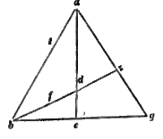
et erunt trigona .azi. et .gzb. sibi inuicem similia; quare est sicut recta .az. ad .zg., ita .iz. ad .zb., et .ia. ad .bg. equalis est enim .az. ex .zg.; equales ergo erunt .zi. ex .zb., et .ia. ex .bg. Rursus quia similia sunt trigona .adi. et .bde., est sicut .ia. ad .be., ita .ad. ad .de., et .id. ad .db. Sed .ia. recte equalis est recta .bg.; quare est sicut .bg. ad .be., ita recta .ad. ad .de., et .id. ad .db.: dupla est enim .bg. ex .be.; quare dupla est .ad. ex .de., et .id. ex .db.: et quoniam equalis est .iz. ex .zb., comuniter si adiungatur recta .zd., erit tota recta .id. equalis duabus .bz. et .zd. Sed .id. ostensa est dupla ex .db.; quare due recte .bz. et .zd. duple sunt recte .bd.: comuniter si auferatur recta .db., remanebit recta .bd. equalis duplo recte .dz.; quare .bd. ex .dz. est dupla: ostensa est enim rectam .ad. duplam esse ex .de.; ergo est sicut .ad. ad .de., ita .bd. ad .dz.; quod oportebat ostendere. Et si ab angulo .g. per punctum .d. transeat linea .gt. Dico quod latus .ab. diuisum est in duo equa super punctum .t.: protraham quidem rectam .gt. extra triangulum .abg., donec concurrit super punctum .k. linee .ik., et erunt trigona .adk. et et (sic) .edg. sibi inuicem similia; quare est sicut .ad. ad .de., ita .ak. ad .ge.: sed .ad. ex .de. est dupla; quare recta .ak. est dupla recte .ge., cui etiam dupla est recta .bg., cum equalis sit .be. ex .eg.: que uero eidem dupla sunt, et sibi inuicem sunt equalia; quare equalis est recta .ak. recte .bg. Rursus quia similia sunt trigona .atk. et .btg., est sicut .ak. ad .bg., ita .at. ad .tb.; est enim .ak. equalis recte .bg., et .at. quidem equalis est recte .tb.: diuisum est ergo latus .ab. in duo equa a linea .gt.; quod oportebat ostendere.
ET quia in trigono .abg. ab angulis .abg. et .agb. due recte concurrunt super dimidium laterum subtendentium ipsos, que sunt recte .bz. et .gt. se inuicem secantes super punctum .d., erit proportio sectionum ipsarum, una uidelicet est sicut .bd. ad .dz., ita .gd. ad .dt. Dico Rursus quod si a reliquo angulo super dimidium lateris subtendentis ipsum recta trahatur, transibit per punctum sectionum reliquarum duarum linearum a reliquis angulis descendentium super dimidium reliquarum basium. Verbi gratia: describatur rursus trigonum .abg.; et super dimidium basium ipsius signentur puncta .t.ez.; et copulentur recte .ae. et .bz. sese inuicem secantes super punctum .d. Dico siquidem si a puncto .g. in punctum .t. recta trahatur, per punctum .d. transibit: quod si ita non est, transibit recta ex .g. in .t. super lineam .bz. inter puncta .bd., uel inter puncta .dz.: transeat primum super rectam .bd. per punctum .f.; et quoniam due recte .bz. et .gt. ab angulis .abg. et .bga. descendunt super dimidium laterum .ab. et .ag. sese inuicem secantes super punctum .f., erit .bf. dupla ex .fz.: sed .ad. ex .dz. est dupla; ergo est sicut .bf. ad .fz., ita .bd. ad .dz.: permutatim ergo est sicut .bf. minor ad .bd. maiorem, ita .bd. maior ad .dz. minorem;
f. 0121 · p. 114
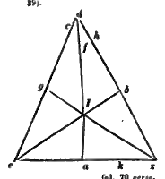
quod est inconueniens; non enim recta protracta ex .g. in .t. transiet per .bz. inter puncta .bd. Similiter ostendetur, ipsam transire non posse inter puncta .dz.; per punctum enim .d. transiet ut dictum est. Ex hoc ergo manifestum est, quod infra trigona non est punctus preter unum, per quem ab angulis transeant recte diuidentes latera trigonj in duo equa. Quare si per punctum ipsum rectam transire uolumus, que diuidat triangulum in duas equas partes, erit utique unaqueque ex descendentibus rectis ab angulis super dimidium laterum ipsius, per quam trianguli in equas portiones diuidentur. Verbi gratia: in trigono suprascripto .abg. datus sit punctus .d., per quem transeant protracte ab angulis recte .ae. et .bz. et .gt. diuidentes latera ipsius trigonj in portiones equales; quelibet enim ipsarum diuidit trigonum .abg. in duo equa: sunt enim trigona .aeb. et .aeg. super equas bases, que sunt .be. et .eg., et sub una altitudine, que est ex .a. in .bg. perpendicularis ducta; quare equale est trigonum .aeb. trigono .aeg., propter eadem et trigona .bzg. et .bza. sibi inuicem sunt equalia; nec non et trigona .gat. et .gtb. sibi inuicem equantur. Sectum est ergo trigonum .abg. in duas medietates ab una quaque linearum .ae. et .bz. et .gt. transeunte per datum punctum .d. Similiter si datus punctus cadat super lineam .ae. inter .ad. uel .de., diuidetur etiam in duo equa trigonum .abg. a linea .ae. transeunte per punctum datum infra triangulum: quod idem intellige si punctus datus fuerit in protractu alicuius duarum linearum .bz. et .gt. Et si punctus datus non ceciderit in lineis descendentibus ab angulis super dimidium laterum ipsius: tunc si ab angulis transire fecerimus rectas per ipsum punctum uenientes usque ad latera trigonj, erunt sectiones unius cuiusque lateris sibi inuicem inequales; ex quibus due sectiones maiores medietate ipsorum laterum erunt circa unum ex angulis trigonj, et due minores circa alium, et una maior, et altera minor reliquum angulum continebant. Verbi gratia: in trigono quidem .dez. protrahantur recte .da. eb. zg. diuidentes latera ipsius per equalia in punctis .a.b.g., et sese inuicem secantes super punctum .i. Et sit punctus datus aliquis infra triangulum .dez., qui non sit in lineis .da. eb. zg., quem oportebit esse infra unum ex sex trigonis continentibus totum triangulum .dez.: que trigona sunt .dib. et .dig. et .die. et .aie. et .aiz. et .zib.: sit primum datus punctus .f. infra triangulum .dib.; cumque duxerimus lineam ex .d. in .f.; et fecerimus eam penetrare super latus .ez., nimirum inter puncta .az. ueniet; et hoc fiet, quia punctus .f. est infra triangulum .daz.: ueniet ergo super punctum .k.; quare .zk. est minus medietate sui lateris .ez. et .ek. est plus. Item ab angulo .z. per punctum .f. rectam fecerimus penetrare cadet utique inter .dg. super rectam .de. cum punctus .f. sit infra triangulum .gzd.; quare ponamus ipsam cadere super punctum .c., erit ergo .ec. plus medietate lateris .de. et .cd. minus. Ergo circa angulum .e. sunt due sectiones maiores, que sunt .ke. et .ec. Rursus si ab angulo .dez. protraxerimus per .f. punctum, rectam cadentem super latus .zd., nimirum inter .db. cadet, cum punctus .f. sit infra triangulum .deb.: cadat ergo recta ducta ab .e. per .f. super punctum .h.; quare .zh. erit plus, et .hd. erit minus medietate lateris .zd.: quare et circa angulum .edz. sunt due sectiones minores medietate laterum, que sunt .cd. et .dh.; et angulus quidem .dze. remanet contentus ab inequalibus sectionibus, scilicet ab una maiore, et ab altera minori medietate suorum laterum; quarum maior est sectio .hz., minor est sectio .zk. Similiter si datus
f. 0122 · p. 115
punctus .f. fuerit infra quodlibet ex quinque trigonis residuis, inuenies hec eadem euenire.
ET si fuerit punctus aliquis datus infra trigonum, qui non sit in lineis descendentibus ab angulis super dimidium laterum ipsius; et uolueris ipsum diuidere in duo equa cum linea transeunte per ipsum punctum; studebis per ea que dicta sunt inuenire angulum contentum ab inequalibus sectionibus; quia circa ipsum que sequuntur operanda erunt. Verbi gratia: Esto trigonum .abg., in quo datus sit punctus .d., qui non sit in aliqua rectarum descendentium ab angulis super dimidias bases ipsius; et uolumus diuidere triangulum .abg. in duas medietates cum linea transeunte per punctum .d. Deprehendantur primum ad oculum super latera casus linearum descendentium ab angulis per punctum .d., ut habeatur notitia anguli contencti ab inequalibus sectionibus, qui sit angulus, qui ad .g., et uni laterum continentium ipsum super reliquum latus a puncto .d. equidistans trahatur, que sit recta .de.; et applicetur ei superficies equalis medietati superficiei .bg. in .ag., que sit superficies .de. in .gz. hoc est dimidium multiplicationis .bg. in .ag., diuidatur per .de., et proueniet .gz. Deinde linee .gz. applicabis paralilogramum deficiens figura tetragona, quod sit equale superficiei .ge. in .gz.; et hoc est quod diuidatur .gz. in duas partes, quarum una multiplicata per aliam faciat equale multiplicationi .ge. in .gz.: quod aliter fieri non poterit nisi quadratum medietatis linee .gz. superhabundet superficiem .ge. in .gz.; uel sit equale eius: fiat siquidem .zi. in .ig. sicut .ge. in .gz.; et copuletur recta .id., et emictatur in punctum .t. Dico quidem trigonum .abg. in duo equa diuisum esse a linea .it. transeunte per punctum .d.; quod sic probatur: quoniam multiplicatio .zg. in .eg. equalis est multiplicationi .zi. in .ig., erunt sicut .zg. ad .zi., ita .ig. ad .eg.; quare erit sicut .zg. ad aliam partem sui, scilicet ad .ig., ita .ig. erit ad aliam partem sui, scilicet ad .ie.: sed sicut .gi. ad .ie., ita .gt. ad .de.; ergo est sicut .zg. ad .ig., ita .gt. ad .de.: quare multiplicatio .ig. in .gt. equalis est multiplicationi .zg. in .de.; sed multiplicatio .zg. in .de. est medietas multiplicationis .ag. in .gb.; ergo et .ig. in .gt. est medietas multiplicationis .ag. in .bg.; quare trigonum .itg. dimidium est trigoni .abg., ut prediximus. Et ut hec cum numeris ostendamus: sit latus .ab. 13., et .ag. 15., et .bg. 14; et protrahatur in ipso cathetus .ac., que erit .12. Casus .bc. erit .5., et .cg. erit 9; et sit punctus .d. inter cathetum .ac., et latus .ag.; et sit elongatus a linea .cg. secundum quantitatem catheti .dk., que sit .3.; et protrahatur linea .ed. in puncto .l.; et sit .dl. octaua et sexta decima pars unius: et quia linea .dl. equidistans est linee .ck., et .dk. recte .lc., erit .lc. equalis .dk. et .dl. recte .kc.; ergo .lc. est .3., et .kc. est 3/16; remanebunt pro .al. nouem: et quia in trigono .acg. protracta est linea .le. equidistans linee .cg., erunt sicut .al. ad .ac., ita .le. ad .cg.; quare .le. erunt 3/4 6; de quibus si auferatur .ld., scilicet 3/16, remanebunt 9/16 6: in quem numerum si diuiserimus factum ex .ag. in dimidium .bg., scilicet .105., uenient 16 pro linea .gz. Item quia est sicut .al. ad .ac., ita .ae. ad .ag.; erit ergo .ae. 1/4 11, remanebunt pro .eg. 3/4 3, scilicet quarta pars linee .ga.: in quibus si multiplicauerimus lineam .gz., uenient 60: diuidenda est ergo linea .gz., scilicet .16. in duas partes; quarum una multiplicata per aliam faciet 60. Et ut hoc fiat, extrahe 60. ex quadrato medietatis linee .gz., remanebunt 4; quorum radix, scilicet 2, addenda est super medietatem linee
f. 0123 · p. 116
.gz.; et sic habebuntur .10. pro linea .gi., remanebunt pro linea .iz. 6.: deinde si per .gi. diuiserimus .105., uenient predicta 1/2 10 pro linea .gt. Demonstrabo aliter lineam .gt. esse 1/2 10: protraham a puncto .i. cathetum .imn. super lineam .gb.; et erit linea .in. equidistans linee .ac.; quare erit sicut .gi. ad .ga., hoc est sicut 10. ad .15., ita .in. ad .ac.; quare .in. erit .8.; et quia paralilogramum est .mk. quadrilaterum, erit linea .mn. equalis linee .dk.; quare .mn. est .3., remanet .im. 5. Rursus quia recta .in. equidistans est recte .ac., erit sicut .gi. ad .ga., ita .gn. ad .gc.; quare .gn. est .6.; remanent ergo .3. pro linea .nc.; cui cum sit equalis recta .ml. erunt et recta .ml. similiter .3.; de qua si extrahatur .dl., scilicet 3/16, remanebunt pro linea .md. 13/16 2: et quia trigona .imd. et .dkt. orthogonia sunt, et sibi inuicem similia, erit sicut .im. ad .md., hoc est sicut .5. ad 13/16 2, ita .dk., scilicet .3., ad lineam .kt.: quare si multiplicauerimus 13/16 2 per 3., et quod prouenerit diuiserimus per .5., ueniet 11/16 1 pro linea .kt.; de qua si extraxerimus .kc., scilicet 3/16, remanebit 1/2 1 pro linea .ct.; cui si addiderimus lineam .cg., que est .9., habebunt utique 1/2 10 pro linea .gt., ut prediximus. Ostendam rursus per numerum, si in eodem trigono protraxerimus lineas .ao. et .bp. transeuntes per .d. punctum, portionem .gp. minorem esse medietate sui lateris, et .go. maiorem. Quoniam trigono .aog. protracta est recta .de. equidistans recte .og., erit sicut .ae. ad .ag., ita .de. ad .og.; ergo est sicut .3. ad .4., ita .de., scilicet 9/16 6. ad .og.; quare si multiplicauerimus .4. per 9/16 6., et summam diuiserimus per .3., uenient 3/4 8 pro linea .go. Rursus quia in trigono .pbg. protracta est recta .de. equidistans recte .bg., erit sicut .bg. ad .de., ita .gp. ad .pe.: unde erunt sicut superhabundantia .bg. super .de., ita .ge. ad .ep.; ergo est sicut 7/16 7 ad 9/16 6, hoc est sicut .119. est ad .105., uel sicut .17. ad .15., ita .ge., scilicet 3/4 3 ad .ep.; quare si multiplicauerimus .15 per 3/4 3; et diuiserimus per .17., uenient 21/68 3 pro linea .ep.; quare tota .gp. erunt minus 1/2 7., que sunt medietas totius linee .ga. Et notandum, quod semper per subtendentem angulum contentum ab inequalibus sectionibus potest transire linea diuidens triangulum in duo equa; et aliquando poterit linea transiens per punctum datum subtendenti angulo contento a maioribus sectionibus, que etiam diuidet triangulum in duo equa; et nunquam transibit recta per datum punctum, qui diuidat triangulum in duas equas partes, que subtendat angulum contentum a minoribus sectionibus.
Diuisum est ergo trigonum .abg. in duas equas partes a linea .it. transeunte per punctum datum .t., et est una ipsarum portionum quadrilaterum .abti.; et alia est trigonum .itg.; quod oportebat facere.
Demonstratio quomodo diuiditur trigonum in duo equa per lineam egredientem a puncto dato extra ipsum.
SI trigonum .abg. per lineam egredientem a puncto dato .d. extra ipsum in duas equas partes diuidere uis, lineam .ad. secans latus .bg. super .e. protrahe; siquidem si recta .be. equalis est recte .eg., factum utique erit propositum; quia .abe. et .aeg. super equas bases sunt, et sub eadem altitudine; unde trigonum .abe. trigono .aeg. iacet equale. Sed non sit .be. equalis recte .eg., erit utique una earum maior; sitque recta .be. maior; a puncto quidem .d. recta protrahatur .zd. equidistans recte .be.; et
f. 0124 · p. 117
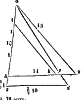

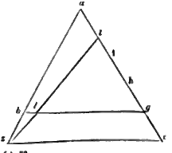
perducatur recta .ab. in .z.. Et quia recta .be. maior est medietate lateris .bg., rectiangula superficies .ab. in .be. est plus medietate rectiangule superficiei .ab. in .bg.; multo plus superficies .ab. in .zd. est plus medietate superficiei .ab. in .bg., cum maior sit .zd. quam .be. Adiaceat siquidem superficies .ib. in .zd. equalis dimidio superficiei, que fit ex .ab. in .bg.; et quoniam maior est superficies .ab. in .be. superficiei .ib. in .zd.; erit proportio .zd. ad .be. minor proportione .ba. ad .bi. Sed proportio .zd. ad .be. equalis est proportioni .za. ad .ab. Disiunctim quidem erit proportio .zb. ad .ba. minor proportione .ai. ad .ib.; quare superficies .zb. in .bi. minor est superficiei .ba. in .ai.: adiungatur quidem recte .bi. paralilogramum superhabundans figura tetragona equale superficiei .zb. in .bi.; hoc est quod recte .bi. adiungatur quedam linea, que multiplicata in se et in .bi. faciat equale multiplicationi .zb. in .bi.; quod paralilogramum sit superficies .kb. in .bt.; et copuletur recta .tkd.; et quia superficies .zb. in .bi. equa est superficiei .bt. in .ti., proportionaliter erit ut .zb. ad .bt., ita .ti. ad .ib.; coniunctim ergo sicut .zt. ad .bt., ita .bt. ad .bi. Sed sicut .zt. ad .bt., ita .zd. ad .bk.; ergo sicut .zd. ad .bk., ita .bt. ad .bi.; quare superficies .kb. in .bt. equa est superficiei .zd. in .bi. Sed superficies .zd. in .bi. equalis est dimidio superficiei .ab. in .bg.; quare trigonum .tbk. dimidium est trigonj .abg. Diuisum est ergo trigonum .abg. a linea egrediente a puncto .d., que est recta .dkt. in duas medietates, quarum una est trigonum .tbk., et alia est quadrilaterum .tkga.; quod oportebat facere. Que etiam operabor cum numeris. Sit latus .ab. 13., et .ag. 15., et .bg. 14., et .dz. 2/5 10, et .bz. 3/7 1.; et diuidam dimidium superficiei .ab. in .bg., scilicet .91. per .zd., hoc est per 2/5 10.; et uenient 3/4 8 pro linea .bi.: et multiplicabo .zb. in .bi., scilicet 3/7 1., per 3/4 8., uenient 1/2 12; quibus superaddam quadratum dimidij linee .bi., scilicet multiplicationem de 3/8 4 in se; que multiplicatio est 11/64 19, erunt 41/64 31.; quorum radix, que est 5/8 5, est linea .lt.; cui si addatur .lb., que est 3/8 4, habebuntur .10. pro linea .tb.: et quia est sicut .zt. ad .bt., ita .zd. ad .bk.; multiplicabo .zd. in .bt., scilicet 2/5 10, per 10., erunt .104.; que diuidam per 3/7 11., hoc est per lineam .zt., et uenient 1/10 9 pro linea .bk.; uel 91, que sunt medietas superficiei .ab. in .bg.; diuidam per .bt., hoc est per .10., exibunt similiter 1/10 9 pro linea .bk.; et sic erit trigonum .btk. dimidium trigoni .abg., ut oportet.
Et si unum ex lateribus trigoni extra trigonum protractum fuerit; et in ipso protractu punctus ille ceciderit, a quo recta egredi oporteat, que diuidat triangulum in duo equa; ut si in trigono .abg. extra trigonum educatur latus .ab. super punctum .z.; et sit .z. punctus datus a quo recta egredi oporteat diuidens triangulum .abg. in duo equa, eodem supradicto modo a puncto .z. producam rectam .ze. equidistantem recte .bg.; et educam latus .ag. in punctum .e.; et ponam superficiem .ze. in .gi. equalem dimidio superficiei .ag. in .gb.; et applicabo recte .gi. paralilogramum, cui superhabundet tetragonum equale eius, quod sit ex .eg. in .gi.; sitque .gt. in .ti.; et copulabo .tlz. Dico diuisum esse trigonum .abg. in duo equa a linea .tz. egrediente a puncto .z., et est una ipsarum partium trigonum .tgl., et alia est quadrilaterum .tabl. Quod sic probatur: Quoniam superficies .gt. in .ti. equa est superficiei .eg. in .gi., est sicut .eg. ad .gt., ita .ti. ad .ig.: coniunctim ergo sicut tota .et. ad .tg., ita tota .tg. ad .ig. Sed sicut .et. ad .tg., ita .ez. ad .gl.: per equale ergo erit sicut .ze. ad .lg., ita recta .gt. ad rectam .ig.; quare superficies .lg. in .gt. equa est superficiei
Divisio Trigoni per Lineam Equidistantem Basi¶
Versio Anglica: Dividing a Triangle Parallel to Its Base (p. 119) · Commentarius: Notae ad Semicirculum Mediae Proportionalis

.ze. in .ig. Sed superficies .ze. in .ig. est medietas superficiei .ag. in .bg.; quare et superficies .lg. in .gt. est medietas superficiei .ag. in .bg.; duplum ergo est superficies .ag. in .gb. superficiei .tg. in .gl. Duplum ergo est trigonum .abg. trigono .tgl.; quare trigonum .tgl. est medietas trigonj .abg., ut oportet. Que etiam demonstrentur in numeris.
Sit rursus latus .ab. 13., et latus .ag. 15.; basis quoque .bg. 14.; et sit .bz. quarta pars ex .ab.; quare et .eg. erit 1/4 3., scilicet quarta ex .ag.; quare .ze. addit quartam partem super .bg.; et sic erit .ze. perticarum 1/2 17.: in quibus si diuiserimus dimidium facti ex .ab. in .bg., scilicet .105., uenient .6. pro linea .gi.; cui si applicauerimus superficiem .gt. in .ti. equalem eius que sit ex .eg. in .gi., erit utique superficies .gt. in .ti. 1/2 22: et ut habeamus notitiam quantitatis linee .ti., diuidam .ig. super punctum .h. in duo equa, et erit .ih. 3.: et quia linea .ig. diuisa est in duo equa super punctum .h.; et ei indirecto adiuncta est linea .it., erit multiplicatio .it. in .gt. cum quadrato linee .ih., quod est .9., equalis quadrato linee .th.; quare .th. est radix de 1/2 31; cui si addatur .hg., que est .3., erit tota .tg. radix de 1/2 31 et 3.; quare binomium est .tg.: et quia, ut demonstratum est, equale est factum ex .lg. in .gt. ei quod est ex .ze. in .ig., quod est .105., diuidenda sunt .105. per lineam .gt., scilicet per binomium, cuius nomina sunt radix de 1/2 31 et 3. Quam diuisionem, qualiter fiat, indicabo; quia binomium est linea .tg., erit utique recisum ipsius binomij linea .ti., que est radix de 1/2 31, minus .3.; cum .hi., que est .3.; auferatur ex .th., que est radix de 1/2 31.; et quia ex .tg. binomio in .ti. reciso prouenit ratiocinatum, scilicet 1/2 22; si diuiserimus 1/2 22 per binomium .gt., ueniet utique recisum .ti.; ergo quotiens 1/2 22 sunt in .105., totiens equale .ti. recisi ueniet ex diuisione de .105. in .tg. binomio; unde diuidenda sunt .105. per 1/2 22., hoc est 210 per 45., uenient 2/3 4.; in quibus si multiplicauerimus recisum .ti., habebimus quantitatem linee .gl.; que multiplicatio sic fit; ex multiplicatione quidem de 2/3 4 in lineam .ti., scilicet in radicem de 1/2 31., uenient quatuor radices, et due tertie de 1/2 31, que sunt una radix de 686., que prouenit ex multiplicatione quadrati de 2/3 4. in 1/2 31.; de qua radice tollenda est multiplicatio de 2/3 4. in lineam .ih., que est .14.; et sic habebitur pro linea .gl. radix de 686., minus .14., que secundum propinquitatem sunt parum minus de 1/5 12, nec non et binomium .gt. secundum propinquitatem est 11/18 8: quibus multiplicatis per 1/5 12, scilicet .tg. in .gl., uenient circa .105., ut oportet. Et sic est procedendum, cum uolumus diuidere aliquem numerum inratiocinatum per aliquod binomium. Et notandum, quod si .105. oporteret diuidere per recisum .it., eadem uia esset tenenda; et egrederetur ex ipsa diuisione binomium, cuius nomina essent radix de 686, et 14; et sic studeas operari in similibus. Sed protrahantur duo latera trigoni extra trigonum continentia unum ex angulis trigoni; et punctus datus cadat infra lineas continentes angulum exteriorem, qui est equalis angulo interiori; et uolumus ab ipso puncto rectam protrahere diuidentem triangulum in duo equa. Vt si trigoni .abg. duo latera .ab. et .bg. producantur in punctis .de.; et infra angulum .ebd. datus sit punctus .i. a quo egrediatur recta diuidens triangulum .abg. in duo equa, copulabo primum .ib., et ducam lineam .ib. in puncto .z. cadens super lineam .ag. Si ergo .az. equalis est .zg., diuisum est trigonum .abg. in duo equa, a linea .iz. Sed si inequales sunt, erit maior una earum, que sit .az.; educam siquidem .za. extra trigonum .abg. super punctum .t.; et a puncto .i. ducam lineam .it. equidistantem linee
f. 0126 · p. 119

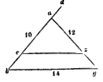
.ba.; et quia maior est .za. medietate lateris .ag., erit maior superficies .ab. in .az. medietate superficiei .ba. in .ag. Vnde adiaceat .lt. in .ak. equalis medietati superficiei .ba. in .ag.; et accipiatur superficies .al. in .kl. equalis superficiei .ta. in .ak., et copuletur recta .li.; et ostendetur per ea, que supra dicta sunt, trigonum .abg. diuisum esse in duo equa a linea .il.; et una sectio earum trigonum est .lac., et alia est quadrilaterum .lcbg.
Et si per equidistantem uni laterum trigoni trigonum aliquod diuidere uis, qualiter hoc fieri debeat in sequenti trigono .abg. demonstrabitur, quod in duas equales partes per equidistantem basi .bg. diuidi oporteat. Latus quidem .ba. emictatur extra trigonum in puncto .d.; et sit .ad. equalis medietati lateris .ba.; et linearum quidem .ba. et .ad. summatur media proportionalis .ae., hoc est quod sit sicut .ba. ad .ea., ita .ea. ad .ad.; et per punctum .e. basi .bg. equidistans ducatur recta .ez. Dico siquidem, trigonum .abg. diuisum esse in duas equas partes a linea .ez., quarum una est trigonum .aez., alterum est quadrilaterum .ebgz.; quod sic probatur: trigona .aez. et .abg. sibi inuicem sunt similia, cum anguli .aez. et .aze. duobus angulis .abg. et .agb. sint equales, exteriores uidelicet interioribus; et angulus .bag. est comunis utrique. Similia uero trigona ad se inuicem in dupla proportione sunt homologorum laterum, idest similium; quare est sicut .ba. ad .ad., ita trigonum .abg. ad trigonum .aez.: est enim .ba. ex .ad. dupla; quare trigonum .abg. trigoni .aez. est duplum: ergo medietas trigoni .abg. est trigonum .aez., uel aliter; quoniam quando tres recte sunt proportionales in proportione continua, est sicut prima ad tertiam, ita spatium, quod a prima ei, quod est a secunda simile, et similiter descriptum. Vnde, ut dictum est, sicut .ba. prima est ad .ad. tertiam, ita quod ab .ab. ei quod ab .ae. duplum, id est quod ab .ab. ei quod ab .ae.; duplum ergo est trigonum .abg. trigono .aez., ut predixi. Aliter quia est sicut .ba. ad .ae., ita .ae. ad .ad., erit factum ex .ba. in .ad. equale ei quod a recta .ae. tetragonum: quare tetragonum recte .ab. duplum est tetragono, quod a recta .ae.; et quia equidistans est .bg. ex .ez., proportionaliter est sicut .ba. ad .ae., ita .ga. ad .az.; quare est sicut tetragonum, quod a recta .ba. ad tetragonum, quod a recta .ae., ita tetragonum, quod a recta .ga. ei quod a recta .az.; duplum est tetragonum recte .ba. tetragono recte .ae. Quare duplum erit tetragonum recte .ga. eius quod est a recta .az.; quare factum ex .ba. in .ag. duplum est facto ex .ea. in .az.; quare trigonum .abg. duplum est trigono .aez. Quod si secundum numerum facere uis, sit latus .ab. 10.; latus quoque .ag. 12.; latus uero .bg. 14.: multiplicabo quidem .ab. in dimidium sui, scilicet .10., per .5., erunt .50., quorum radix est .ae.: et ducam rursus .ga. in dimidium sui, et habebuntur 72; quorum radix est linea .az.: et protraham lineam .ez., et erit trigonum .aez. medietas trigoni .abg., cum sint circa unum angulum; et fiat multiplicatio .ea. in .az. medietas ex .ba. in .ag.: multiplicatio quidem ex .ea. in .az., scilicet ex radice de .50., in radicem de .72., facit radicem de .3600., scilicet .60.,, que sunt dimidium ex .ba. in .ag., scilicet de .120.: et si uis habere notitiam recte .ez., multiplicabis .bg. in dimidium sui, et uenient .98. pro quadrato linee .ez.; et sic studeas facere in similibus.
Incipit de diuisione trigonorum in tres partes.
SI TRIGONVM .abg. in tres equas partes diuidere uis super unum ex lateribus suis,
f. 0127 · p. 120
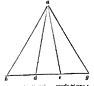


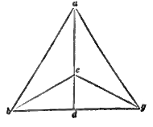
ut dicamus super latus .bg., ipsum .bg. in tres partes equas diuide, que sunt .bd. de. eg.; et copulentur recte .ad. et .ae. Dico quidem trigonum .abg. diuisum esse in tres partes equales, que sunt trigona .abd. et .ade. et .aeg.: sunt enim super equas bases, et sub altitudine una; quare sibi inuicem equalia esse necesse est. Et si super datum punctum .z. ex trigono .bgd. tertiam partem uoluero, copulabo .bz.; et si .gz. fuerit tertia pars ex .gd., utique trigonum .bgz. erit tertia pars trigonj .bgd.; si uero .gz. non fuerit tertia pars ex .gd., erit tunc plus uel minus. Esto primum minus; quare accipiam ex .gd. tertiam partem, que sit .ga.; et copulabo rectam .ai. equidistans .zb.; et copulabo, rectam .iz., que aufert a trigono .bgd. quadrilaterum .ibgz.; quod demonstrabo tertiam esse ex toto trigono .bgd.; uerbi gratia: quia recta .ga. est tertia pars totius .gd., erit trigonum .bga. tertia pars totius trigoni .bgd. Et quia trigona .bza. et .bzi. sunt inter equidistantes .bz. et .ai.; et super eandem basim .bz. equalia sibi inuicem sunt, comuniter addatur trigonum .bgz., erit quadrilaterum .ibgz. equale trigono .bga., tertia ergo pars est quadrilaterum .ibgz. trigoni .bgd.: residuum uero, scilicet trigonum .izb., diuidetur in duas partes equales per qualem uolueris ex modis supradictis.
RVRSVS adiaceat trigonum .abg. in tres equas partes diuisum, que sint trigona .abd. et .ade. et .aeg.; quare sectiones .bd. de. eg. sibi inuicem sunt equales; in superiori quidem figura posuimus punctum .z. inter .bd.; quod idem esset si posuissemus ipsum inter .eg., cum eodem modo esset operandum. Nunc uero ponamus punctum .z. inter .de. super latus .bg.; a quo uolumus lineam producere abscidentem tertiam partem trianguli .abg.: primum quidem copuletur .az.; et per punctum .d., uel per punctum .e. equidistans trahatur linee .az., que sit linea .ei.; et copuletur .zi. Dico quidem, quod recta .zi. abscidit a trigono .abg. tertiam partem, que est trigonum .izg.; quod sic probatur: quia trigona .azi. et .aze. inter duas equidistantes sunt; et super eandem basim sibi inuicem sunt equalia; comuniter si addatur trigonum .ade., erit trapezion .adzi. equale triangulo .ade. Sed triangulus .ade. est tertia pars trigoni .abg.; quare et quadrilaterum .adzi. est similiter tertia pars trigonj .abg.; est et trigonum .abd. alia tertia pars trigonj .abg.; remanet pro reliqua tertia parte trigonum .izg., quod abscisum est a trigono .abg. per rectam .iz.; quod oportebat facere.
ADIACEAT iterum trigonum .abg., quod oporteat inter tres consortes diuidere; quorum unus quisque uelit in sua portione habere unum ex lateribus triangulj .abg. Latus quidem .bg. diuidam in duo equa super punctum .d.; et copulabo rectam .ad., et componam .dc. tertiam partem linee .ad.; et copulabo rectas .bc. et .cg. Dico quidem, trigonum .abg. diuisum esse in tres equas partes, quarum unaqueque est super unum ex lateribus trianguli .abg.; que partes sunt trigona .abc. et .acg. et .bcg.; quod sic probatur: quia recta .dc. est tertia pars recte .da. Erit .ac. dupla ex .cd.; quare trigonum .abc. est duplum trigoni .bcd.; propter eadem ergo et trigonum .acg. duplum est trigonj .gcd. Rursus quia equalis est recta .bd. recte .dg. equalia sunt trigona .cbd. et .cdg. sibi inuicem; quare totum .cbg. trigonum duplum est uniuscuiusque trigonorum .cbd. et .cdg.; et que eidem sunt dupla, sibi inuicem sunt equalia; quare trigona .acb. et .acg. et .bcg. sibi inuicem sunt equalia. Diuisum est ergo trigonum .abg. etc.
f. 0128 · p. 121

Demonstratio qualiter a trigono abscidatur pars data per lineam protractam per punctum datum infra triangulum.
ADIACEAT siquidem trigonum .abg., et in ipso datus sit punctus fortuitu .d., per quem transire uolo rectam abscindentem datam partem, ut dicamus tertiam a triangulo .abg.: protraham quidem per punctum .d. lineam .ae., et considerabo utrum sectio .be. uel .eg. sit tertia pars lateris .bg.; quia si .be. est tertia pars ex recta .bg., tunc trigonum .abe. erit tertia pars trigoni .abg. Si autem neutra eorum est tertia pars lateris .bg., considerabo que dixi super unam quamque linearum egredientium a reliquis angulis: et uenientium super reliqua latera per punctum .d.: quod si non inuenero aliquam ex sectionibus laterum esse tertiam sui lateris, protraham a puncto .d. lineam .dz. equidistantem linee .ge., et ponam superficiem .dz. in .zi. equalem tertie parti superficiei .ag. in .bg., et applicabo linee .gi. superficiem equiangulam, cui deficiat figura tetragona equalem superficiei .gz. in .zi., que sit superficies .it. in .tg.; et copulabo rectam .td., et perducam eam in .k. Dico quidem quod a trigono .abg. abscisa est tertia pars, scilicet triangulum .tkg. a linea .tk. transeunte per punctum .d.; quod sic probatur: quia factum ex .gi. in .gz. equatur facto ex .it. in .tg., erit sicut .gi. ad .it., ita .tg. ad .gz.: permutatim ergo est sicut .ig. ad .gt., ita .gt. ad .zt. Sed sicut .gt. ad .zt., ita .kg. ad .dz.; ergo sicut .kg. ad .dz., ita .gi. ad .tg.; quare factum ex .tg. in .gk. equale est facto ex .dz. in .zi. Sed factum ex .dz. in .gi. est tertia pars facti ex .ag. in .gb.; quare et superficies .tg. in .gk. est tertia pars superficiei .ag. in .gb.; quare trigonum .tkg. est tertia pars trigoni .agb., ut dictum est.
Demonstratio qualiter abscidatur pars data a dato triangulo per lineam egredientem a puncto dato extra triangulum.
ESTO trigonum .abg., et extra ipsum datus sit punctus .d.; et oportet ut a triangulo .abg. abscidatur pars data, ut dicamus tertiam per lineam egredientem a puncto .d.; copulabo primum rectam .ad. secantem latus .bg. super punctum .c.; et si .bc. uel .cg. est tertia pars linee .bg., nimirum abscisa est tertia pars trigonj .abg. per lineam .ad. ascendentem a puncto .d.: quod si ita non est, protraham latera .ab. et .ag. extra triangulum .abg. in punctis .ez., et per punctum .d. lateri .bg. equidistantem protraham lineam .ez., et ponam superficiem .de. in .gi. equalem tertie parti superficiei .ag. in .gb., et applicabo recte .gi. paralilogramum, cui superhabundet figura tetragona equale ei quod fit ex .eg. in .gi.: sitque superficies .ik. in .kg.; et per punctum .k. ducam rectam .kmd. Dico, triangulum .kmg. esse tertiam ex triangulo .abg.; quod sic probatur: quoniam equalis est superficies .eg. in .gi. superficiei .gk. in .ki., est sicut .eg. ad .gk., ita .ki. ad .ig.: coniunctim ergo est sicut .ek. ad .gk., ita .gk. ad .ki. Sed sicut .ek. ad .gk., ita .de. ad .gm.; ergo est sicut .ed. ad .gm., ita .gk. ad .gi.: superficies ergo .gk. in .gm. equalis est superficiei .de. in .gi. Sed superficies .de. in .gi. est tertia pars superficiei .ag. in .gb.; quare et superficies .gk. in .gm. est tertia pars superficiei .ag. in .gb.: et quia est sicut superficies .kg. in .gm. ad superficiem .ag. in .gb., ita trigonum .kgm. ad trigonum .agb.: est ergo trigonum .kgm. tertia pars trigoni .abg., ut predixi. Similiter eodemque modo possemus abscidere a quolibet triangulo partem quamlibet datam per lineam egredientem a puncto dato in protractu lateris ipsius extra ipsum, uel infra protractionem duorum laterum continentium
f. 0129 · p. 122
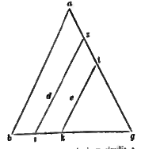


ex lateribus trigonj. Rursus si infra trigonum .abg. duo puncta data fuerint .de.; et uolumus triangulum .abg. in tres equas partes diuidere per rectas transeuntes per puncta .de., abscidemus primum a trigono .abg. triangulum .zig. per lineam .zi. transeuntem per punctum .d. continentem duas tertias trigonj .abg., remanebit quadrilaterum .zabi. pro tertia parte trianguli .abg.: de inde triangulum .izg. diuidemus in duo media a linea .tk. transeunte per punctum .e.; et erit una portio earum quadrilaterum .tzik., et alia erit trigonum .tkg.: eodemque modo procedas, si puncta data fuerint extra triangulum.
ET si triangulum .abg. per equidistantes rectas basi .bg. diuidere uolumus, protraham latus .ba. secundum quantitatem tertie partis ipsius in puncto .d.; et iaceat in directo ipsius recta .de. equalis recte .da., et erit tota .ae. quantitas duarum tertiarum linee .ba.: et ponam lineam .az. mediam inter .ba. et .ad.: rursus inter .ba. et .ae. in proportione media ponam rectam .ai.; et per puncta .zi. protraham rectas .zt. ik. equidistantes basi .bg. Dico, trigonum .abg. diuisum esse in tres partes equales, quarum una est trigonum .azt., altera quadrilaterum .zikt., tertia erit quadrilaterum .ibgk.; quod sic probatur: quia est sicut .ba. ad .az., ita .az. ad .ad.; erit sicut .ba. ad .ad., ita trigonum .abg. ad .azt., cum ipsa trigona sibi inuicem sint similia: est enim .ba. ex .ad. tripla; quare et trigonum .abg. triplum est trigoni .azt.. Ergo trigonum .azt. tertia pars est trigoni .abg. Rursus quia est sicut .ba. ad .ia., ita .ai. ad .ae. erit sicut .ba. ad .ae., ita trigonum, quod ab .ea. ei quod ab .ai. simile; et similiter descripta sunt enim trigona .aik. et .abg. sibi inuicem similia super latera .ai. et .ab. descripta; quare est sicut .ea. ad .ab., hoc est sicut .2. est ad .3., ita trigonum .aik. est ad trigonum .abg.: due ergo tertie trigoni .abg. est trigonum .aik.; de quo si auferatur trigonum .azt., quod est tertia pars trigoni .abg., remanebit quadrilaterum .zikt. tertia pars trigonj .abg.: residuum uero simile quadrilaterum .ibgk. erit alia tertia pars: diuisum est ergo trigonum .abg. in tres partes equales; quod oportebat facere. Et sic per demonstratos modos omnia genera trigonorum possunt diuidi in quatuor partes uel plures. Vnde ad diuisionem quadrilaterum ueniamus.
De Divisione Quadrilaterorum, Trapeziorum, Multilaterorum et Circulorum¶
Versio Anglica: Divisions of Quadrilaterals, Trapezoids & Circles (pp. 122–148) · Commentarius: Notae ad Divisionem Trapezij
f. 0129 · p. 122
Incipit de diuisione quadrilaterorum.
GENERA quidem quadrilaterorum sunt tria, paralilogramina uidelicet, et caput ascisa: atque diuersilatera: paralilogramina quoque sunt, quorum latera et anguli oppositi sibi inuicem equantur: quorum speties sunt quatuor: in prima quarum sunt tetragona, que omnia latera equalia et angulos rectos habent; in secunda uero sunt parte altera longiora, que tantum duo latera habent sibi inuicem opposita equalia, et omnes angulos rectos habent: in tertia quoque sunt rumbi, qui ex quatuor lateribus equalibus constant, sed angulos habent inequales. In quarta sunt rumboides, quorum tantum duo latera sibi inuicem opposita, nec non et angulos oppositos equales habent: et quia unus est modus diuidendj has quatuor speties paralilogramorum; omnes figuras eorum sub eisdem notulis terminare disposui, ut que in una earum dixerimus, idem in reliquis de ea esse uideatur. Adiaceat quidem tetragonum: et parte altera longius: rumbus: et rumboides .abcd., quorum unumquodque in duo equa diuidi oporteat; quoniam paralilogramina sunt quadrilatera .abcd., dyametri ipsorum ipsos per equalia secant; quare si protraxerimus dyametrum .ac., uel .bd., ut in prima cernitur figura, erunt utique in duas equales partes ab unoquoque dyametrorum ipsorum diuisa.
f. 0130 · p. 123

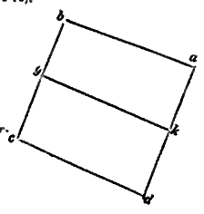


Verbi gratia: si protraxerimus dyametrum .ac., erit itaque trigonum .abc. equale trigono .acd.; quia latus .ad. equale est lateri .bc., et latus .ab. equale est lateri .dc.: basis quoque .ac. est utrique triangulo comunis. Et si super aliquod laterum diuisionem incipere uis, ipsum latus in duo equa secabis, et per punctum sectionis super latus sibi oppositum reliquis lateribus rectam equidistantem protrahe, ut in secunda patet figura, in qua super dimidium lateris .bc. signatus est punctus .e., et ab ipso protracta est recta .ef. equidistans rectis .ba. et .cd.; et sic totum quadrilaterum .ac. diuisum est in duo equa paralilogramina, que sunt .ae. et .fc.: sunt enim super equas bases .be. et .ec., et in eisdem equidistantibus .ad. et .bc. Similiter si protraxerimus lineam .gk. equidistantem rectis .ad. et .bc., et diuidentem latera super dimidium laterum .ab. cd., erit utique diuisum unumquoque suprascriptorum paralilograminorum in duo equa a linea .gk., ut in tertia figura ostenditur: sunt enim paralilogramina .gd. et .bk. sibi inuicem equalia, cum sint super equas bases .cg. gb. eisdem equidistantibus .cd. et .ab. Et si super aliquod laterum punctus datus fuerit, ut in quarta figura, in qua datus est punctus .h. cadens inter puncta .be., signabis in oppositum eius punctum .i. cadens inter .fd.; et iaceat .fi. equalis recte .eh., et copuletur recta .hi. Dico quidem, diuisum esse unumquodque quatuor quadrilaterorum in duo equa a linea .ih.; quod sic probatur: quoniam in equidistantibus .ad. et .bc. recte incidunt .fe. et .ih., erit angulus .ifk. angulo .keh. equalis, nec non et angulus .fik. angulo .khe., et anguli qui ad .k. sibi inuicem sunt equales, et basis .fi. basi .eh. est equalis: equale ergo est trigonum .fki. trigono .khe.: comuniter si adiungatur penthagonum .kfabh., erit quadrilaterum .iabh. equale quadrilatero .abef., quod est medietas totius quadrilateri .ac. Vel aliter quia paralilogramina sunt .ae. et .fc. et .ic. in eisdem equidistantibus .ad. et .bc. habent latera sibi opposita equalia; quare equale est latus .af. lateri .be. et .fd. ex .ec. Sed .fd. est dimidium ex .ad.; quare .fd. equale est recte .af.; ergo et .af. equalis est recte .ec., et .fi. equalis est recte .he.: tota ergo .ai. toti .ch. est equalis, et recta .di. recte .bh. est equalis, et latus .hi. est comune: totum ergo quadrilaterum .iabh. quadrilatero .ihcd., ut diximus, est equale. Similiter si datus punctus caderet inter .ec.; quantum distaret ab .e. uersus .c., tantum acciperes ex recta .fa.; incipiendo ab .f.; et sic secundum hoc potes diuidere omnia paralilogramina a dato puncto super quodlibet laterum.
ET si paralilogramum aliquod in duo equa per lineam protractam a puncto dato infra ipsum secare desideras, ut paralilogramum .ag., infra quod datus sit punctus .c., per quem uolumus lineam transire diuidentem paralilogramum .ag. in duo equa super dimidium dyametrj .bd.; ponas punctum .f., et copulabis .cf., et protrahes eam in utramque partem in puncta .ez. Dico, diuisum esse paralilogramum .ag. in duas equas sectiones, quarum una est quadrilaterum .eabz., et alia quadrilaterum .edgz.; quod sic probatur: quoniam in equidistantibus .ad. et .bg. due recte .ez. et .db. incidunt, erit angulus .fde. equalis angulo .fbz., et angulus .fed. angulo .fzb., nec non et anguli qui ad .f. sibi inuicem sunt equales; equiangula ergo sunt trigona .fed. et .fbz.: et quoniam equalis est recta .fb. recte .fd., equalis erit et recta .de. recte .bz., et trigonum .dfe. trigono .bfz. erit equale; comune accipiatur quadrilaterum .dfzg., erit quadrilaterum .ezgd. equale trigono .bgd.; sed trigonum .bgd. est medietas paralilogramj .ag.;
f. 0131 · p. 124


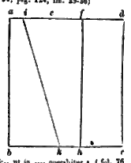

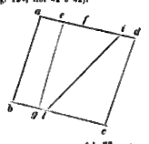
quare quadrilaterum .ezgd. est medietas paralilogramj .ag., ut predixi: hoc eodem modo diuiduntur omnia paralilogramina erecta protracta a puncto dato super unum ex lateribus ipsius: uerbi gratia; ut si datus punctus esset .e., diuideret quidem rectam .db. in duo equa super punctum .f.; et per ipsum punctum protraheretur linea .ez., que diuideret paralilogramum .ag. in duo equa, ut probatum est. Et si paralilogramum aliquod in duo equa secare uis per lineam egredientem a puncto dato extra ipsum, ut paralilogramum .ac., extra quod datus sit punctus .e., protraham rursus dyametrum .bd., et diuidam ipsum super punctum .g., et copulabo rectam .eg., et protraham eam in puncto .f.: diuisum est paralilogramum .ac. in duo equa per lineam egredientem a puncto dato .e.; quod probatur per suprascriptam figuram; et est una medietatum ipsius quadrilaterum .fabk., et alia est quadrilaterum .fkcd., ut in ipsa figura patet.
Incipit de diuisione paralilogramorum in plures partes.
ADIACEANT quidem suprascripte quatuor speties paralilogramorum .abcd.; et uolumus aliquod ipsorum in tres equales partes diuidere super duo data latera eius, que sint .ad. et .bc.; diuidamque latus .ad. in tres equales partes, que sint .ae. ef. fd., et per puncta .ef. protraham rectas .eg. fh. equidistantes lateribus .ab. et .dc. Dico quod quale uis ex suprascriptis quatuor paralilogramis diuisum esse in tres equas sectiones a rectis .eg. et .fh.; quod sic probatur. Quoniam equidistantes sunt recte .ad. et .bc., et cum eis copulate sunt recte equidistantes .ab. et .eg. et .fh. et .de., erunt inter se equales; quare paralilogramina sunt quadrilatera .ag. eh. fc., et habent bases equales sibi inuicem, que sunt .bg. et .gh. et .hc.: est enim quelibet earum tertia pars lateris .bc.; quare et unum quodque ipsorum paralilogramorum tertia pars est totius .ac. paralilogramj, ut in prima patet figura. Et si super aliquem punctum datum super uno laterum rectam protrahere uis, que abscidat a paralilogramo dato tertiam partem; et datum punctum ponamus esse super latus .ad.; diuiso quidem primo latere .ad. super puncta .ef. ordine supradicto, uidelicet quod quelibet sectionum .ag. eh. fe. sit tertia pars totius .ad., et datus punctus fuerit .e.; protraham rectam .eg., et erit a paralilogramo .ac. abscisum paralilogramum .ag. a linea protracta a puncto .e., quod est tertia pars ipsius. Similiter si punctus datus fuerit .f., erit paralilogramum .fc. tertia pars paralilogramj .ac.: si punctus datus non fuerit super .e., aut super .f., erit itaque inter .ae., aut inter .ef., aut inter .fd.: sit primum inter .ae. punctus datus .i.; et uolo a paralilogramo .ac. auferre tertiam partem eius a linea protracta a puncto .i.; signabo primum punctum .f. super tertiam partem lateris .ad., et ab ipso puncto .f. protraham .fh. equidistantem lateribus .ab. et .dc.; et sic erit paralilogramum .fc. tertia pars ex paralilogramo .ac.; quare paralilogramum .ah. duplum est paralilogrami .fc.: unde oportet ipsum paralilogramum .ha. diuidere in duo equa per lineam protractam a puncto .i.; unde quantum distat .i. ab .a., tantum distare faciam .k. ab .h.: et copulabo .ik., et erit quadrilaterum .iabk. medietas paralilogrami .ah.: secta est ergo tertia pars paralilogrami .ac. per rectam .ik., et est diuisum inter equas partes, que sunt quadrilatera .iabk. et .ikhf., et paralilogramum .fc., ut in secunda patet figura. Et si datus punctus .i. fuerit inter .fd., operabitur idem in aduersam partem, uidelicet a paralilogramo .ac. abscidam paralilogramum .ag., quod sit tertia eius;
f. 0132 · p. 125
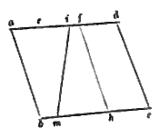

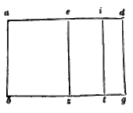

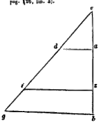
deinde paralilogramum .ec. diuidam in duo equa per lineam protractam a puncto .i., que sit linea .il., que abscidit a paralilogramo .ac. tertiam partem eius, scilicet quadrilaterum .ilcd., ut in tertia patet figura. Et si punctus .i. erit inter .ef., abscidam a paralilogramo .ac. paralilogramum .fc., quod est tertia pars eius; et residuum diuidam in duo equa per lineam protractam a puncto .i., que sit recta .im.; et abscidatur per lineam .im. quadrilaterum .iabm. a paralilogramo .ac., quod est tertia pars eius; relique due partes erunt quadrilaterum .imhf., et paralilogramum .fc., ut in quarta figura, scilicet in rumboide .abcd., demonstratur. Eodem modo potest omnem paralilogramum diuidi in quatuor uel plures partes equales. Verbi gratia: si uis paralilogramum aliquod diuidere in quatuor partes equales, diuide primo ipsum in duo equa: aut per dyametrum ipsius: aut per rectam equidistantem duobus lateribus eius; deinde unamquamque ipsarum duarum portionum in duo equa secabis; et erit totum paralilogramum in .IIIIor. partes diuisum.
De diuisione paralilogramorum in partes inequales.
Esto paralilogramum .abgd., quod in equaliter inter tres consortes diuidere uolumus, ita quod primus habeat medietatem, secundus tertiam, tertius sextam. Diuidam primum paralilogramum .ag. in duo paralilogramina equalia, que sunt .az. et .eg.; deinde ab uno ipsorum secabo tertiam partem, que sit paralilogramum .ig., hoc est quod recta .id. sit tertia pars ex .ed. Dico, paralilogramum .ag. diuisum esse in tres portiones predictas, quarum medietas est paralilogramum .az., et eius sexta est paralilogramum .ig., et reliquum, scilicet paralilogramum .et., est tertia pars totius .ag. Quoniam .id. est tertia ex .ed., erit .id. sexta pars ex tota .ad.; quare paralilogramum .ig. sextam partem esse dico ex toto paralilogramo .ag.: possumus quidem qualemcumque partem uolumus accipere ex predictis a linea producta a puncto dato extra, uel intus, uel super unum ex lateribus paralilogramj per ea que dicta sunt.
Incipit de diuisione quatuor figurarum caput abscisarum, que duo tantum latera habent equidistantia.
CAPVT abscisarum speties sunt quatuor, prima quarum dicitur semicaput abscisa, altera eque caput abscisa, tertia diuerse caput abscisa, quarta caput abscisa declinans; et quia omnium harum diuidendj modus est unus, ipsas omnes per ordinem ponere disposui eisdem litteris, siue notulis denotatis; ut que dicta super aliquam ipsarum inueniantur, super unam quamque reliquarum esse dicta cognoscas. Adiaceant ergo .IIIIor. speties caput abscisarum .abgd. habentia latera .ad. et .bg. equidistantia; et uolumus quamlibet ipsarum diuidere per rectam equidistantem basibus earum, que sunt recte .bg.: et quia ex equidistantibus .ad. et .bg. minor est .ad. quam .bg., si protraxerimus rectas .ba. et .gd., in partes .ad. concurrent: concurrant enim ad punctum .e.; et sit quadratus recte .ze. medietas quadratorum rectarum .eb. et .ae.; et per punctum .z. protraham .zi. rectam equidistantem basi .bg. Dico, trapeziem .abgd. in duo equa diuisum esse a linea .zi. equidistante recte .bg.; quod sic probatur. Quoniam quadrata linearum .eb. et .ae. dupla sunt quadrato linee .ez. Dupla erunt et trigona .ebg. et .ead. trigono .ezi., cum sint sibi inuicem similia. Sed si de trigono .ebg. relinquamus trigono .ezi., qui est equalis sibi idem, remanebunt quadrilaterum .zbgi., et trigonum .ead. equalia trigono .ezi.: comuniter si auferatur trigonum .ead., remanebit quadrilaterum .zg. equale quadrilatero .ai.: diuisum est ergo quadrilaterum .abgd. in duo equa a linea .zi.; quod oportebat facere.
f. 0133 · p. 126
Quod etiam ostendamus cum numeris: sit latus .ab. 12., et .bg. 12, et .ad. sit .3; latus quoque .gd. 15 perticas contineat: et quia in trigono .ebg. protracta est protracta est (sic) recta .da. equidistans basi .bg., erit sicut .ad. ad .bg., hoc est sicut .3 est ad .12., ita .ea. ad .eb.; quare erit sicut .3. ad .9., ita .ea. ad .ab.; ergo .ea. est .4., scilicet tertia pars ex .ab.; tota ergo .eb. est .16.: additis ergo quadratis linearum .eb. et .ea. in unum, scilicet 256. et .16.; erunt .272.; quorum medietas, scilicet 136., est quadratum linee .ez.; et quia est sicut .ez. ad .eb., ita .zi. ad .bg.; erit itaque sicut quadratum linee .ez. ad quadratum linee .eb., hoc est sicut 136 est ad 256, quorum proportio in minimis est sicut .17 ad .32., ita quadratum linee .zi. ad quadratum linee .bg.: quare si multiplicauerimus .17 per 144, et diuiserimus per .32., uenient 1/2 76. pro quadrato linee .zi.: et quia orthogonium est trigonum .ebg., orthogonium erit et trigonum .ezi., nec non et trigonum .ead.: quare si multiplicauerimus dimidium ex .ez. in .zi., habebimus utique embadum trianguli .ezi., quod est .51., quod prouenit ex radice multiplicationis quarte partis de .136. in quadratum linee .zi., hoc est in 1/2 76; que multiplicatio est radix de 2601.; de quo embado si astulerimus trigonum .ead., quod est .6., remanebunt .45. pro embado quadrilaterj .azid.; que .45 sunt dimidium totius quadrilaterj semicaputascisi .abgd.: quia si multiplicauerimus dimidium ex .ab. in coniunctum ex .ad. et .bg., scilicet .6 per .15., utique duplum de .45, scilicet .90 prouenient: quare probatur, quadrilaterum .ai. dimidium esse ex toto quadrilatero .abgd.: uel aliter extracta .ez. ex .eb., scilicet radice de .136 de .16. pro linea .zb., remanebunt .16, minus radice de .136.; cuius dimidium, quod est .8., minus radice de .34., si multiplicauerimus per coniunctum ex .zi. et .bg., scilicet per 12, et radice de 1/2 76., habebimus similiter .45. pro embado quadrilateri .zg. Nam qualiter ipsa multiplicatio fieri debeat, ut habeatur modus multiplicandi binomia per recisa, ostendere procuramus. Pones primum nomina predictorum, ut in margine cernitur, et multiplicabis integra per integra, scilicet .12 per 8, erunt integra .96.; quibus adde multiplicationem de 8 per radicem de 1/2 76, prouenient .96, et una radix facti ex multiplicatione de 64. in 1/2 76, scilicet de 4896.; de quibus extrahe multiplicationem de 12 in radicem de 34, scilicet unam radicem de 4896, remanebunt 96 tantum; de quibus extrahe multiplicationem radicis de 34. in radicem de 1/2 76, scilicet 51., remanebunt 45, ut predixi, pro embado quadrilateri .zg.
ET si super latus .ad. aliquod ex supradictis caput abscisis in duo equa diuidere uis, latera .ad. et .bg. equidistantia in duo equa diuidas super puncta .t.k., et copulabis rectam .tk., ut in secunda patet figura. Dico siquidem, quadrilaterum .abgd. diuisum esse in duo equa a linea .tk.; quod sic probatur. Copulabo rectas .tb. et .tg., et erunt trigona .tkb. et .tkg. sibi inuicem equalia, cum sint sub una altitudine: et habeant bases equales. Rursus quia trigona .bat. et .gtd. sunt sub altitudine una, est sicut .at. ad .td., ita trigonum .bat. ad trigonum .gtd.: est enim .at. equalis recte .td.; quare trigonum .bat. equale est trigono .gtd. Demonstratum est ergo et trigonum .tkb. equale trigono .tkg.; quare quadrilaterum .ak. equale est quadrilatero .tg. Diuisum est ergo quadrilaterum .abgd. in duo equa a linea .tk.; et est manifestum ex his que diximus, quod in omni quadrilatero habente duo latera equidistantia, si recta aliqua proportionaliter secauerit ipsa latera equidistantia, in eadem proportione secabit ipsam figuram.
f. 0134 · p. 127
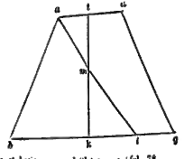


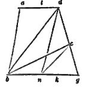

Fuit enim, ut diximus, sicut .at. ad .td., ita .bk. ad .kg.: quare fuit sicut .at. ad .td., ita quadrilaterum .ak. ad quadrilaterum .tg. Et si quadrilaterum duorum laterum equidistantium in duo equa diuidere uis per lineam protractam a dato puncto super minus latus equidistantium, ut quadrilaterum .abgd., quod diuisum est in duo equa a linea .tk.; et in ipso super latus .ad. datus sit punctus .a., accipiam super latus .kg. rectam .kl. equalem recte .ta.; et erit .bl. dimidium laterum .ab. et .bg., et copulabo rectam .al. Dico, quadrilaterum .abgd. diuisum esse in duo equa a linea .al. Quod sic probatur. Quoniam equidistans est recta .at. recte .kl.; et in eis incidit recta .al., erunt anguli .tam. et .mlk. sibi inuicem equales; propter eadem ergo et angulus .atm. angulo .mkl. est equalis, nec non et anguli qui ad .m. sibi inuicem equantur, cum sint a uertice; et basis .at. basi .kl. est equalis; quare trigonum .amt. equale est trigono .lmk.; quibus si addatur in comune quadrilaterum .mabk., erit trigonum .abl. equale quadrilatero .abkt.; quod dimidium totius .ag., ut in tertia patet figura. Simili quoque modo si datus punctus super latus .ad. fuerit .d., accipiam equalem recte .td. rectam .kn., et erit tota .gn. dimidium laterum .ad. et .bg.: et copulabo rectam .dn., que diuidet quadrilaterum .abgd. in duo equa, ut in hac quarta figura cernitur: quod probabitur per ea que dicta sunt in precedenti figura. Et hoc quoque habetur, quod si punctus datus super lineam .bg. erit inter puncta .n.l., casus linee diuidentis ipsam figuram cadet super latus .ad. Sed si punctus fuerit datus inter .b.n., uel inter .lg.; qualiter linea ab ipso producatur diuidens totum quadrilaterum in duo equa demonstrabimus. Reiterato quidem quadrilatero .abgd. duorum laterum equidistantium; et in eo protracta recta .dn. diuidens quadrilaterum .abgd. in duo equa. Datus punctus super lineam .bg. sit .b.; copulabo quidem rectam .db., et ponam ei equidistantem lineam .nc., et copulabo rectam .bc. Dico, quadrilaterum .abgd. diuisum esse in duo equa a linea .bc., que protracta est a puncto dato .b.; quod sic probatur: trigona quidem .ncb. et .ncd. sibi inuicem sunt equalia, cum sint inter equidistantes .bd. et .nc., et super eandem basim .nc.; quibus si addatur in comune trigonum .cng., erit trigonum .cgb. equale trigono .dgn. Sed trigonum .dgn. est medietas quadrilateri .abgd.; quare trigonum .cgb. est medietas quadrilateri .abgd. Et sciendum, quod si punctus datus fuerit inter puncta .bn.; et super lineam .bn. linea protracta ab ipso dato puncto secabit lineam .gd. inter puncta .cd.; que sectio inuenietur si datus punctus inter .bn. copulabitur cum puncto .d.; et ipsi linee equidistans trahatur a puncto .n. Simili quoque modo operandum est, si punctus datus super lineam .bg. fuerit inter .lg. Verbi gratia: Adiaceat rursus quadrilaterum .abgd. diuisum in duo equa a linea .al., et sit .g. punctus datus; copulabo supradicto ordine rectam .ga., et ei protraham equidistantem rectam .lf., et copulabo .gf., que diuidet quadrilaterum .abgd. in duo equa, et egreditur a puncto dato .g. Quod probatur ordine et modo supradicto. Iam ostensum est quomodo in duo equa quadrilatera duorum equidistantium laterum diuidi debeant a linea protracta ab omni dato puncto super lineas equidistantes ipsius; nunc uero ostendamus quomodo diuidantur a linea egrediente a dato puncto super reliqua latera.
ADIACEAT rursus quadrilaterum .abgd. diuisum in duo equa a linea .zi. equidistante basi .bg., et protrahatur etiam in eo linea .gf. inuencta in suprascripta figura, et sit punctus datus super lineam .ab. in quacumque uis parte ipsius;
f. 0135 · p. 128
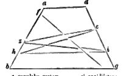

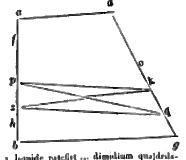

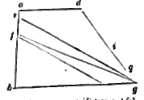

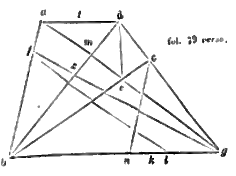
eritque inter .bz., uel inter .zf., siue inter .fa., uel erit unus ex ipsis; unde si datus punctus fuerit .b., diuidetur utique quadrilaterum .abgd. in duo equa a linea .bc.: similiter si datus punctus fuerit .z., recta quidem .zi. diuidit quadrilaterum .abgd., ut dictum est. Et si .f. fuerit punctus datus, nimirum recta .fg. secabit quadrilaterum .abgd. in duo equa, ut ostensum est: et si .a. fuerit, secabitur a recta .al. in duo eque secundum ea que premisimus. Sed sit datus punctus .h. inter .b.z. puncta, copulabo lineam .hi.; et per punctum .z. protraham rectam .zc. equidistantem recte .ih., et copulabo rectam .hc. Dico, quadrilaterum .abgd. sectum esse in duo equa a linea .hc. protracta a puncto .h.; quod sic probatur. Quoniam inter equidistantes .hi. et .zc., et super basim .hi. sunt trigona .hic. et .hiz., ipsa trigona sibi inuicem sunt equalia; quare si addiderimus unicuique eorum in comune quadrilaterum .igbh., erit quadrilaterum .cgbh. equale quadrilatero .izbg., quod est dimidium totius quadrilateri .abgd., ut ostensum est. Et si a puncto .p. posito inter .zf. recta sit protrahenda, copulabitur recta .pi., et ei equidistans erit recta .zq.; et copulabitur recta .pq., que diuidit quadrilaterum .abgd. in duo equa; quod probatione non indiget, cum per ea que dicta sunt liquide patefiat: et si punctus datus fuerit inter .a. et .f., sit .r., copulabo rectam .rg., et ei equidistantem ponam rectam .fs., et copulabo rectam .rs., que diuidet quadrilaterum .abgd. in duo equa: uerbi gratia: trigona .fsg. et .sfr. sibi inuicem equalia sunt; quibus addito in comune trigono .sbf., erit trigonum .rbs. equale trigono .fbg. Sed trigonum .fbg. est dimidium quadrilateri .abgd.; quare et trigonum .rbs. erit dimidium eiusdem quadrilateri. Simili quoque modo operandum est, si punctus datus fuerit super latus .dg.
DEMONSTRABO rursus alio modo qualiter quadrilatera duorum laterum equidistantium diuidi debeant ab angulis ipsius. Sit quadrilaterum .abgd. caputascisum, cuius .ad. et .bg. latera sint equidistantia, et minus eorum sit .ad.; et protraham in eo dyametros .ag. et .bd. sese inuicem secantes super punctum .m.; et quia latera .ad. et .bg. sunt equidistantia, erunt trigona .amd. et .bmg. similia: quare est sicut .bg. ad .ad., ita .bm. ad .md., et .gm. ad .ma.: maior enim .bg. quam .ad.; maior ergo et .bm. quam .md., et .gm. quam .ma.: diuidantur ergo dyametri .ag. et .db. in duo equa super puncta .e.z., et per punctum .e. equidistans dyametro .bd. trahatur recta .ec., et copuletur recta .bc. Dico, quadrilaterum .abcd. diuisum esse ab angulo .b. a linea .bc.; quod sic probatur: copulabo rectas .be. et .ed.; et quia punctus .e. est in medio dyametri .ag., erunt trigona .ade. et .deg. sibi inuicem equalia, nec non et trigonum .abe. trigono .bge. est equale; quare quadrilaterum .edab. dimidium totius quadrilateri .abgd. continet: et quia trigona .bdc. et .bde. sunt inter equidistantes .bd. et .ec. et super basim .bd., erunt sibi inuicem equalia: quibus addito in comune trigono .abd., erit quadrilaterum .abcd. equale quadrilatero .abed. Sed quadrilaterum .abed. dimidium est quadrilateri .abgd.; quare et quadrilaterum .abgd. dimidium est quadrilateri .abgd. Similiter si protraxerimus lineam .zf. equidistantem dyametro .ag., et copulauerimus rectam .gf., erit quadrilaterum .abgd. diuisum in duo equa a linea .gf. protracta ab angulo .g. Deinde ut diuisio proueniat a reliquis angulis, accipiam rectas .bl. et .gn. equales dimidio laterum .ad. et .bg.; uel lineas .ce. et .fz. producam, et cadent necessario super puncta .l.n.; quia superius protracta fuit .ne. equidistans dyametro .bd.
f. 0136 · p. 129
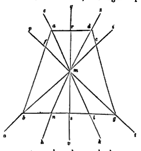
et .lf. equidistans dyametro .ag.; et protraham rectas .al. et .dn., et uenient proposita, ut superius demonstratum. Demonstratum est ergo quomodo quadrilatera duorum laterum equidistantium diuidantur a puncto dato super quodlibet latus ipsius; nunc dicamus qualiter diuidi debeant a dato puncto extra figuram.
ADIACEAT rursus quadrilaterum .abgd. duorum laterum equidistantium diuisum in duo equa ab angulis ipsius a lineis .al. et .dn. et .gf. et .bc.; quibus rectis ab utraque parte in infinitum protractis in puncta .e.z.i.t. k.h. o.p., demonstrabitur punctum extra quadrilaterum .abgd. aliquem dari non posse nisi super unam ex ipsis .IIIIor. lineis, uel inter duas earum per ordinem; quare si datus fuerit punctus super aliquam ipsarum, erit siquidem ipsa recta protracta a dato puncto diuidens quadrilaterum .abgd. in duo equa: ut si datus punctus fuerit .e., egredietur ab ipso linea .eal., que diuidit quadrilaterum .abgd. in duo equa; quod idem intelligas in reliquis. Sed si datus punctus .q. cadens inter lineas .ea. et .zd. super latus .ad.; et uolo ut a puncto .q. egrediatur recta diuidens quadrilaterum .abgd. in duo equa; quoniam equidistantia sunt latera .ad. et .bg., producam rectam .qm., et ducam eam in puncto .v. Dico, quadrilaterum .abgd. diuisum esse in duo equa a linea .rs., que egreditur a puncto .q. dato; quod sic probatur: quoniam recte .ad. et .nl. sibi inuicem equidistantes sunt; et in eis recta incidit .rs., erit angulus qui sub .ars. equalis angulo qui sub .rsl., nec non et angulus .sla. angulo .lar. est equalis, et recte .am. et .ml. sibi inuicem sunt equales; cum recte .ad. et .nl. sibi inuicem equales esse demonstrate sint; quia cum in equalibus et equidistantibus rectis recte sese inuicem secant, per equalia se secare in geometria monstratur: unde equalis est recta .nm. recte .md., et .am. recte .ml., ut predixi: quare trigona .arm. et .msl. sibi inuicem equalia et equiangula atque equilatera sunt; quibus si in comune addatur quadrilaterum .absm., erit quadrilaterum .absr. equale triangulo .abl., scilicet dimidio quadrilateri .abgd. Sectum est ergo quadrilaterum .abgd. in duo equa a linea .rs., que egreditur a puncto .q. Similiter si datus esset punctus sub linea .nl. inter rectas .nh. et .lk., eodemque modo esset operandum, uidelicet copularetur ille punctus cum .m., et produceretur ipsa recta super latus .ad.
f. 0137 · p. 130
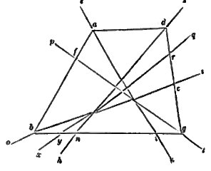
Verbi gratia: ut si punctus fuerit .v.; diuideretur utique quadrilaterum .abgd. in duo equa a linea .rs. egrediente a puncto .v. dato. Et si inter lineas .nh. et .ob. datus fuerit punctus .x., ut in hac alia cernitur figura; habeantur duo fila, quorum unum extendatur super dyametrum .ab., et sit fixum super punctum .d.; et aliud extendatur ab .n. in .c., et sit fissum (sic) super punctum .n.; et erunt tunc fila sibi inuicem equidistantia: et moueatur filum primum ex .b. uersus .n. secans lineam .bn.; et aliud moueatur ex .c. uersus .d. secans lineam .cd.; et sint semper in motione sua sibi inuicem equidistantia: et hoc fiat donec sectiones linearum .bn. et .cd. respiciant secundum rectitudinem datum punctum .x.; et tunc faciant transire rectam protractam a puncto .x. per sectiones illas; et proueniet quesitum. Verbi gratia. Cadat filum primum super rectam .dy., secundum super rectam .rn.; et sint sibi inuicem equidistantia: et puncta .ry. respiciant se secundum rectitudinem cum puncto .x.; et protrahatur recta .xyr. Dico, rectam .ry. secare quadrilaterum .abgd. in duo equa; quod sic probatur. Quoniam fila .nr. et .dy. sunt equidistantia; et in eis sunt trigona .ncd. et .nry., super basim .nr. sibi inuicem ipsa trigona sunt equalia: comuniter si addatur trigonum .rgn., erit trigonum .rgy. equale trigono .dgn.: sed trigonum .dgn. dimidium est quadrilateri .abgd.; ergo et trigonum .rgy. dimidium est eiusdem quadrilateri. Eodemque modo operandum est si punctus erit datus inter lineam .dz., et lineam .ci.: ut si ille punctus esset .q.; et respiceret secundum rectitudinem puncta .r.y. inter equidistantia fila .dy. et .nr.; quare si per punctum descendit recta transiens per puncta .r.y., diuidetur quadrilaterum .abgd. in duo equa, ut ostensum est. Eademque uia operandum est si punctus caderet inter lineas .gl. et .lk., uel inter lineas .fp. et .ae., hoc est quod poneretur filum super .g.a., et figeretur super punctum .a., et aliud super .lf., et figeretur super punctum .l., et mouerentur fila equidistanter secantia rectas .af. et .gl., donec sectiones aspicerent punctum datum in rectitudine una. Verum si punctus datus fuerit extra lineam .bf., et inter lineas .fp. et .ob.; qualiter operandum sit, in hac alia demonstretur figura, in qua protracte sint recte .oi. et .pt. diuidentes ab angulis .b. et .g. quadrilaterum .abgd.; et punctus datus sit .z. cadens inter rectas .fp. et .ob., a quo uolumus protrahere lineam diuidentem quadrilaterum .abgd. in duo equa.
f. 0138 · p. 131
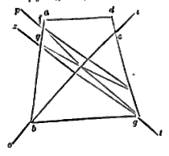

Extendam primum filum ex .c. in .f., et sit fixum super .f.; et aliud filum extendatur super latus .gb., et sit fixum super punctum .g.: deinde moueantur fila equidistanter secantia rectas .bf. et .cg., donec sectiones respiciant punctum .z. datum. Verbi gratia: cadat filum, quod fixum fuit super .g., super lineam .gq., reliquum uero super lineam .fx.; et sint puncta .x.q.z. in rectitudine una; et recte .gq. et .fx. sint equidistantes: et copuletur recta .zqx. Dico quidem, quadrilaterum .abgd. in duo equa diuisum esse a linea .qx., que protracta est a puncto .z. dato; quod sic probatur. Quoniam equidistantes sunt recte .gq. et .xf., erunt trigona .qgx. et .qgf. sibi inuicem equalia: quibus si addatur in comune trigonum .qbg., erit quadrilaterum .qbgx. equale trigono .fbg., scilicet dimidio quadrilateri .abgd. Eodemque modo operabimus si punctus datus fuerit extra lineam .cg., et inter rectas .ci. et .gt. Demonstratum ergo est quomodo diuidatur quadrilaterum duorum laterum equidistantium a linea egrediente ab omni puncto extra figuram.
De diuisione eiusdem generis, qua quadrilaterorum per rectam transeuntem per punctum datum infra ipsum.
SIT quadrilaterum caput abscisum .abgd., cuius latera .ad. et .bg. sint equidistantia; et minus eorum sit .ad. Et iaceat diuisum in duo equa a qualibet rectarum .al. dn. gf. bc., ut supra: sit primus punctus datus .e. cadens infra triangulum .amd.: copulabo siquidem rectam .em., et protraham eam in utramque partem in puncta .ih. Dico, quadrilaterum .abgd. diuisum esse in duo equa a linea .hi.; quod sic probatur: trigona .hma. et .mil. sibi inuicem sunt equalia; quibus si addatur in comune quadrilaterum .abim., erit quadrilaterum .abih. equale triangulo .abl., quod continet dimidium quadrilateri .abgd. Simili quoque modo, si punctus datus ceciderit infra triangulum .nml., erit operandum, uidelicet copulabimus ipsum punctum cum puncto .m., et producemus ipsam lineam in utramque partem, et habebimus optatum. Et si datus punctus fuerit super aliquam ex predictis rectis .al. dn. gf. bc.; ipsa namque erit recta transiens per ipsum punctum diuidens quadrilaterum .abgd. in duo equa. Sed si punctus datus fuerit infra quadrilaterum .abnm. et .dmlg., oportebit nos operari cum filis, uidelicet ponam primum unum filum super puncta .d.b., et figam eum super punctum .d., et adhuc extendam aliud filum ex .n. in .c. figens ipsum super .n., et ducam ipsa fila equidistanter secando rectas .bn. et .cd., donec sectiones sese respiciant per punctum datum, si possibile fuerit: et si hoc impossibile inuenietur, extendam rursus fila ex .a. in .g., et ex .f. in .l., et figam ea super puncta .a.l., et ducam ipsa equidistanter secando lineas .fa. et .gl., donec sectiones respiciant se per punctum datum: quod etiam si fuerit impossibile, extendam rursus fila ab .c. in .g. et ab .f. in .c., et figam ea super puncta .g.f., et ducam ea equidistanter secando rectas .bf. et .cg., donec sectiones respiciant se per punctum datum; quod sine dubio erit possibile: et tunc protrahatur recta per sectiones illas, et habebitur propositum: quod probabitur per ea que supra disimus (sic). Nunc satis dictum est de diuisione caput abscisarum in duas partes equales: modo qualiter diuidi debeant per inequalia in data proportione ostendere procuramus.
ADIACEAT rursus quadrilaterum .abgd., quod diuidi oporteat per rectam equidistantem basi sue in data proportione .ez. ad .zi. Latera quidem .ba. et .gd. a punctis .a. et .d. protrahantur: donec concurrant in .t.;
f. 0139 · p. 132


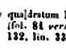
et ponam quadratum linee .tl. ad quadratum linee .at. sicut .zi. ad .ez.; et sit quadratum linee .ht. ad quadratum linearum .bt. et .tl., sicut .ez. ad .ei.; et per puncta .l.h. equidistantes utrique rectarum .hg. et .ad. protraham rectas .lm. et .hk. Dico, quadrilaterum .ag. diuisum esse in proportione data numeri .ez. ad numerum .zi. a linea .hk.; quod sic probatur. Quoniam trigona .tlm. et .tad. similia sunt, erit sicut quadratum linee .tl. ad quadratum linee .ta., ita trigonum .tlm. ad trigonum .tad.: est enim sicut .zi. numerus ad numerum .ez., ita quadratum linee .tl. ad quadratum linee .ta.: per equale ergo erit sicut .zi. ad .ez., ita trigonum .tlm. ad trigonum .tad.: coniunctim ergo erit sicut .ei. ad .ez., ita trigona .tlm. et .ead. ad trigonum .tad.: permutatim ergo erit sicut .ez. ad .ei., ita trigonum .tad. ad trigona .tad. et .tlm.: est enim sicut .ez. ad .ei., ita quadratum linee .ht. ad quadrata linearum .bt. et .tl. Sed est sicut quadratum linee .ht. ad quadrata linearum .bt. et .tl., ita trigonum .thk. ad trigona .tbg. et .tlm.: per equale ergo erit sicut .ez. ad .ei., ita trigonum .thk. ad trigona .tbg. et .tlm. Sed trigono .thk. equalia sunt quadrilaterum .ak. et trigonum .tad. Similiter et trigonis .tbg. et .tlm. equalia sunt quadrilaterum .ag. et trigona .tad. et .tlm.: ergo est sicut .ez. ad .ei., ita quadrilaterum .ak. cum trigono .tad. ad coniunctum ex quadrilatero .ag. et trigonis .tad. et .tlm.: ita fuit trigonum .tad. ad trigona .tad. et .tlm. Vnde proportio quadrilateri .ak. ad quadrilaterum .ag. est sicut .ez. ad .ei.: disiunctim et ergo erit sicut .ez. ad .ei., ita quadrilaterum .ak. ad quadrilaterum .hg., ut oportet: quod etiam ostendamus cum numeris. Sit latus .ad. 6. et .ab. 12., et .bg. 15., et .dg. 15.; et sit rectus angulus qui ad .b.; quare productis .ba. et .gd. in .t., erit .at. 8., et .td. 10.: quare tota .tb. erit .20.; et sit proportio .ez. ad .ei., sicut .4. ad .3.; erit ergo quadratum recte .tb. 400., et quadratum linee .tl. erit .48.; quia .iz. ex .ze. est 3/4; unde tres quarte de .64., scilicet quadrati linee .ta. sunt .48.; quibus insimul iunctis erunt .448.; de quibus si acceperimus proportionem .ez. ad .ei., scilicet quatuor septimas, uenient .256. pro quadrato linee .th.: ergo .th. est .16: et quia recta .th. dupla est ex .ta., erit ergo .hk. ex .ad. similiter dupla; ergo .hk. est .12. Vnde si coniunxerimus .kh. cum .ad., et coniunctum multiplicauerimus per dimidium catheti .ah., quod est .4., uenient 72. pro area quadrilateri .ak.: item multiplicato dimidio ex .bh., quod est .2. in coniunctum ex .bg. et .hk., scilicet in .27., uenient .54. pro area quadrilateri .hg.: est enim proportio de 72 ad 54. sicut .4. ad .3., que est proportio data ex .ez. ad .zi. Aliter prontius adiaceat .ms. ad .ls. sicut proportio quadrati linee .tb. ad quadratum linee .ta.; et diuidatur .ml. super .n., et sit .ln. ad .nm. proportio data; et accipiatur quadratum linee .th. ad quadratum linee .tb. sicut .ns. ad .sm.; et protrahatur .hk. equidistans basi .bg.: probatur rursus, quadrilaterum .ak. ad quadrilaterum .hg. esse sicut .ln. ad .nm.; quoniam est sicut quadratum linee .tb. ad quadratum linee .ta., ita trigonum .tbg. ad trigonum .tad.; et est proportio .ms. ad .ls. sicut quadratum linee .tb. ad quadratum linee .ta.: quare erit sicut .ms. ad .ls., ita trigonum .tbg. ad trigonum .tag. Rursus quia est sicut .ms. ad .sn., ita quadratum linee .tb. ad quadratum linee .th.: est enim sicut quadratum linee .tb. ad quadratum linee .ht., ita trigonum .tbg. ad trigonum .thk.: erit etiam et sicut .ms. ad .ns., ita trigonum .tbg. ad trigonum .thk.: conuersim ergo sicut .sm. ad .nm.; ita trigonum .tbg. ad quadrilaterum .hg.;
f. 0140 · p. 133
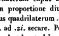


fuit sicut .ms. ad .ls., ita trigonum .tbg. ad trigonum .tad. Vnde si permutauerimus, erit sicut numerus .ms. ad trigonum .tbg., ita numerus .ls. ad trigonum .tad., et numerus .ns. ad trigonum .thk.: ergo numeri .ls., et .ns. ad trigonum .tad., et .thk. sunt in una proportione; in ea uidelicet quam habet numerus .ms. ad superficiem .tbg., in qua etiam est numerus .nm. ad quadrilaterum .hg.: quare disiunctim erit sicut .sl. ad .ln., ita trigonum .tad. ad quadrilaterum .ak.; et erit etiam sicut .sn. ad .nm., ita quadrilaterum .ak. ad quadrilaterum .hg.: ergo diuisum est quadrilaterum .ag. datum per lineam .hk. equidistantem basi .bg. in proportione etiam data numeri .ln. ad numerum .nm.; quod oportebat facere: quod etiam operemur cum numeris: est enim, ut diximus superius, quadratum linee .tb. 400, et linee .ta. 64, quorum proportio in minimis est sicut .25 ad .4: quare ponam .ms. 25., et .ls. 4., remanebit .ml. 21.; quibus diuisis in proportione data, scilicet in ea quam habet .4. ad .3. super punctum .n., erit .ln. 12. et .n.m. 9: quare si acceperimus quadratum linee .th. ad quadratum linee .tb., sicut .sn. ad .sm., hoc est sicut 16 ad .25., inueniemus rursus, quadratum linee .th. esse .256.; quare .th. erit .16., sicut superius inuenimus. Vel aliter quadratum linee .ta. auferam ex quadrato linee .tb., remanent .336.; super quatuor septimas quorum, scilicet super .192, si addiderimus quadratum linee .ta., erunt similiter .256. pro quadrato linee .th. Et si per rectam protractam super duo latera equidistantia quadrilaterum caput abscisum in data aliqua proportione diuidere uis, ipsa latera in eadem proportione diuide, et in puncta diuisionum lineam protrahe. Verbi gratia: uolumus quadrilaterum .abgd. super latera .ad. et .bg. equidistantia in data proportione .ez. ad .zi. secare. Ponam inter .ad. et .bg. puncta .t.k., et sit sicut .ez. ad .zi., ita .at. ad .td., et .bk. ad .kg.; et copulabo .tk. Dico, quadrilaterum .ak. ad quadrilaterum .tg. esse sicut .ez. ad .zi.; quod sic probatur: producam a puncto .t. in punctis .bg. rectas .tb. et .tg., et erunt trigona .tbk. et .tkg. sub altitudine una; quare est sicut .bk. ad .kg., ita trigonum .tbk. ad trigonum .tkg. Rursus quia trigona .bat. et .gtd. sunt sub altitudine una, cum sint inter duas equidistantes, est sicut .at. ad .td., hoc est .bk. ad .kg., ita trigonum .bat. ad trigonum .gtd.: ergo sicut .bk. ad .kg., hoc est sicut .ez. ad .zi., ita quadrilaterum .ak. ad quadrilaterum .tg.: diuisum est ergo quadrilaterum .abgd. in proportione data a recta .tk. protracta super latera equidistantia; quod oportebat facere. Et si diuisionem in eadem proportione ab angulis .a. et .d. habere uolumus, ponemus super latus .bg. puncta .n.l.; et iaceat recta .kl. equalis recte .ta., et recta .gn. equalis recte .bl., ut in hac alia ostenditur figura; et copulabimus rectas .dn. et .al.; et probabitur per ea que dicta sunt, trigonum .abl. equale esse quadrilatero .a.k.: quare erit sicut .ez. ad .zi., ita trigonum .abl. ad quadrilaterum .algd. Rursus quia trigona .abl. et .dgn. sunt super equas bases .bl. et .gn.; et in eisdem equidistantibus .ad. et .bg. erunt sibi inuicem equalia. Quare trigonum .dgn. equale est quadrilatero .abkt.; quare residuum, scilicet quadrilaterum .nbad., equale erit quadrilatero .tkgd. Vnde erit sicut quadrilaterum .abkt. ad quadrilaterum .tkgd., hoc est sicut .ez. ad .zi., ita .dgn. trigonum ad quadrilaterum .nbad.: diuisum est ergo quadrilaterum .abgd. ab angulis .a. et .d. in data proportione .ez. ad .zi.; quod oportebat facere. Et si ab aliquo angulorum .b. et .g. rectam protrahere uis diuidentem quadrilaterum .abgd. in ea proportione quam habet .ez. ad .zi., hoc dupliciter facere potes:
f. 0141 · p. 134

ut si ab angulo .b. hoc facere uolueris. Signabis punctum .n. ad quem prouenit ab angulo .d. diuisio supradicta; et pones superficiem .bg. in .gc. equalem superficiei .dg. in .gn.; et copulabis rectam .bc.; uel dyametro protracto ex .b. in .d. equidistantem rectam protrahe ex .n. in .c., et copulabitur .bc., ut diximus. Similiter faciamus si ab angulo .g. operari uolumus, scilicet intelligam punctum .l., ad quem prouenit diuisio supradicta, ab angulo .a.; et ponam superficiem .gb. in .bf. equalem superficiei .ab. in .bl.; uel dyametro protracto ex .a. in .g. ponam equidistantem ex .l. in .f., et copulabo .gf., que diuidet quadrilaterum .abgd. in proportione data; quia erit sicut .ez. ad .zi., ita trigonum .fbg. ad quadrilaterum .afgd., nec non et triangulus .bgc. ad quadrilaterum .abcd. erit sicut .ez. ad .zi.; que probabuntur per ea que dicta sunt; nec non et diuidemus ipsum quadrilaterum ab omni puncto dato super aliquod laterum ipsius, et etiam ab omni puncto dato infra, uel extra.
Incipit de diuisione quadrilaterorum in plures partes.
SI uero aliquod caput ascisum in tres partes equales a rectis equidistantibus sue basi diuidere uis, ut quadrilaterum .abgd., cuius latera .ad. et .bg. sint equidistantia, reliqua uero latera .ab. et .dg. a punctis .a.d. producam, donec concurrant in puncto .e.; et adiaceat recta .zti.; et sit proportio .zi. ad .it. sicut proportio quadrati linee .eb. ad quadratum .ae.; et diuidam .tz. in tres equas sectiones, que sint .tk. kl. lz., et ponam quadratum linee .em. ad quadratum linee .eb. sicut .ki. ad .zi. Rursus ponam quadratum linee .en. ad quadratum linee .eb. sicut .li. ad .zi., et per puncta .m.n. equidistantes basi .bg. producam rectas .mo. np.. Dico, quadrilaterum .ag. diuisum esse in tria equa, que sunt quadrilatera .ao. mp. ng.; quod sic probatur. Est enim, ut diximus, sicut quadratum linee .be. ad quadratum linee .ae., ita trigonum .ebg. ad trigonum .ead.; quare erit sicut .zi. ad .it., ita trigonum .ebg. ad trigonum .ead. Item quia est sicut .zi. ad .ik., ita quadratum linee .be. ad quadratum linee .me. Sed sicut quadratum linee .be. ad quadratum linee .me., ita trigonum .ebg. ad trigonum .emo.; ergo sicut .zi. ad .ik., ita trigonum .ebg. ad trigonum .emo. Erit etiam sicut .zi. ad .il., ita trigonum .ebg. ad trigonum .enp.: disiunctim erit sicut .it. ad .tk., ita trigonum .ead. ad quadrilaterum .ao.; erit etiam sicut .tk. ad .kl., ita quadrilaterum .ao. ad quadrilaterum .mp.; est enim .tk. equalis .kl.; quare et .ao. quadrilaterum quadrilatero .mp. est equale. Rursus erit sicut .kl. ad .lz., ita quadrilaterum .mp. ad quadrilaterum .ng.: est enim .kl. equalis .lz.; et .pm. quadrilaterum equale erit quadrilatero .ng.: equalia ergo sunt sibi inuicem quadrilatera .ao. mp. ng., ut prediximus; et ut hec operentur cum numeris; .ad. sit .6., et .bg. 15., et .ab. .12., et .dg. .15.; et sit rectus angulus qui ad .b.; quare tota .eb. erit .20., cuius quadratum ad quadratum linee .ea. est sicut 25. ad .4.: ponam .zi. 25., et .ti. 4., remanet .zt. 21.; quibus in tres equas partes diuisis, erunt in una quaque partium .tk. kl. lz. 7; quare .ik. est .11.: multiplicabo ergo .11. per .400; et diuidam per .25.; uel uigesimam quinctam partem quadrati linee .eb., que est .16., extendam per .11., uenient .176 pro quadrato linee .em. Rursus extendam .il., scilicet .18. per 16, que sunt 1/25 quadrati linee .eb., uenient .288. pro quadrato linee .en.: ergo .am. est radix de .176., minus .8., cum .ea. sit .8.; et linea .mn. est radix de .288., minus radice de .176.: linea uero .nb. est .20, minus radice de .288.:
f. 0142 · p. 135

et quia est sicut quadratum linee .ea. ad quadratum linee .ad., hoc est sicut .16 ad .9., ita quadratum linee .em. ad quadratum linee .mo.: si multiplicauerimus .176 per 9, et diuiserimus per .16.; aut si 1/16 de .176., que est .11., multiplicauerimus per .9., uenient utique .99. pro quadrato linee .mo. Rursus si 1/16 de .288., scilicet ex quadrato linee .en., que est .18, multiplicauerimus per .9., uenient .162. pro quadrato linee .np.: quibus inuentis, si embadum quadrilaterorum .ao. et .mp. et .ng., secundum ea que docuimus, inuestigauerimus; ipsa quadrilatera sibi inuicem equalia esse reperies. Aliter cum quadrato linee .eb. adde duplum quadrati linee .ea., et inuenies, tertiam partem ipsorum esse quadratum linee .em. Similiter si duplum quadrati linee .be. addiderimus cum quadrato linee .ea., tertia eius quod prouenerit erit quadratum linee .em.: uel extractis .64. de .400., scilicet quadratum linee .ea. ex quadrato linee .eb., remanebunt .336.; quorum tertia, scilicet .112., addita super .64., ueniunt .176. pro quadrato linee .em.: quibus etiam additis .112., reddunt similiter .288. pro quadrato linee .en.; quorum probatio prouenit ex his que dixi superius, cum docuimus diuidere proportionaliter quadrilatera caput abscisa. Et si latus .ab. fuerit secus uiam; et uoluerit unusquisque trium consortium, ut mos est, tertiam ipsius lateris habere. Diuidam latus .ab. in tres equas partes super puncta .il.; et copulabo rectas .iolp.; et per punctum .m. protraham rectam .mh. equidistantem linee .io.; et per punctum .n. equidistantem recte .lp. protraham rectam .nq.; et copulabo rectas .ih. lq.; et sic diuidetur quadrilaterum .abgd. in tres equas partes a lineis .ih. et .nq., que sunt quadrilatera .aihd. et .ilqh. et .lbgq.; quod sic probatur. Quoniam quadrilaterum .amod. est tertia pars quadrilateri .abgd., si ex eo auferatur trigonum .oim., et restauretur ei trigonum .oih., erit quadrilaterum .aihd. equale quadrilatero .amod.: eodemque modo probabuntur cetere diuisiones. Et Si latera .ad. et .bg. equidistantia secauerimus in tres equas sectiones: et in eis copulauerimus rectas; diuidetur utique quadrilaterum in tres equas sectiones. Verbi gratia: adiaceat caput abscisum .abgd.; et diuidantur latera .ad. et .bg. in tria equa super puncta .ez. it.; et copulentur recte .ei. zt. Dico, quadrilaterum .abgd. sectum esse in tres equas sectiones, que sunt quadrilatera .al. et .zg.: habent enim bases et capita sibi inuicem equalia; et sunt sub altitudine una: uel quia est sicut .ae. ad .ed., ita .bi. ad .ig.; erunt ergo in eadem proportione quadrilaterum .ai. ad quadrilaterum .eg.: et si coniunxerimus, erit sicut .bi. ad .bg., ita quadrilaterum .ai. ad quadrilaterum .ag.: tertia enim pars est .bi. ex .bg., tertia quoque erit et quadrilaterum .ai. ex quadrilatero .ag. Rursus quia est sicut .ae. ad .ez., ita .bi. ad .it.; et est equalis .ae. ex .ez., et .bi. ex .it.; quare et quadrilaterum .ai. ex quadrilatero .et. est equale; tertia ergo pars est .ai. ex .ag. quadrilatero; tertia quoque erit et .et. quadrilaterum ex quadrilatero .ag.: residuum uero .zg. erit reliqua tertia pars. Et si tertiam partem quadrilateri .ag. ab aliquo angulorum .a. et .d. secare uolumus, diuidemus rectas .ei. et .zt. in duo equa super puncta .km.; et copulabimus rectas .ak. et dm.; et perducemus eas in puncta .l.n.; et erit unumquodque trigonorum .abl. et .dgn. tertia pars quadrilateri .abgd. Quod sic probatur. Quia recta .ek. equalis est recte .ki., erunt et trigona .ake. et .ikl. sibi inuicem equalia et similia, cum equidistantes sint bases .ae. et .il.: quare si in co-
f. 0143 · p. 136

mune addatur quadrilaterum .abik., erit triangulus .abl. equalis quadrilatero .eb. Sed quadrilaterum .eb. est tertia pars quadrilateri .ag.; quare trigonum .abl. est tertia pars quadrilateri .ag. Similiter ostendetur, et trigonum .dgn. equale esse quadrilatero .zg., quod est tertia pars totius .ag.: resecato quidem trigono .abl. ex quadrilatero .abgd., remanebit quadrilatero .algd. capudascisum: quod si diuisum fuerit per quemcumque modum ex supradictis, reddet quadrilaterum .abgd. diuisum in tres equas sectiones. Similiter si auferatur trigonum .dgn. ex quadrilatero .abgd., remanebit quadrilaterum .abnd. ad diuidendum in duo equa. Et si per lineam protractam á puncto .b. tertiam ex quadrilatero .ag. abscidere uolumus, protraham primum lineam .dn. abscidentem á quadrilatero .ag. tertiam eius, que est trigonum .agn.; et protraham dyametrum .bd., et ei equidistantem ponam lineam .ne., et copulabo rectam .bc. Dico quod recta .bc. abscidit á quadrilatero .ag. tertiam eius, que est trigonum .cgb.: quia si super trigonum .cgn. addatur trigonum .cbn., quod est equale trigono .cnd., erit trigonum .cgb. equale trigono .dgn.; ergo trigonum .cgb. est tertia quadrilateri .ag. Aliter quia trigona .abd. et .gbd. sunt sub una altitudine: sub ea uidelicet que cadit orthogonaliter inter equidistantem .ad. et .bg.; erunt ideo ad inuicem sicut bases: quare est sicut .bg. ad .ad., ita trigonum .bgd. ad trigonum .abd.: coniunctim ergo sicut .bg. ad coniunctum ex .bgad., ita trigonum .bgd. ad quadrilaterum .ag.: adiaceat quidem recta .ge. equalis recte .ad.; erunt ergo sicut .bg. ad .be., ita trigonum .dbg. ad quadrilaterum .ag.: et abscidatur ex tota .be. recta .bz., que sit tertia ex .be.; et iaceat recta .gc. ad rectam .gd. sicut .bz. ad .bg., et copuletur recta .bc. Dico, trigonum .bcg. esse tertiam quadrilateri .ag.
Verbi gratia: trigona quidem .bgc. et .bgd. ad se inuicem sunt sicut bases; erit ergo sicut .gc. ad .gd., hoc est sicut .bz. ad .bg., ita trigonum .bgc. ad trigonum .bgd. Est enim et sicut .bg. ad .be., ita trigonum .bgd. ad quadrilaterum .ag.: erit ergo sicut .bz. ad .be., ita trigonum .bgc. ad quadrilaterum .ag.: est enim .bz. ex .be. tertia pars: quare et trigonum .bgc. erit tertia pars quadrilateri .ag., ut predixi. Quod etiam demonstremus cum numeris: sit .ad. 6., et .bg. 24.; et unaqueque rectarum .ab. et .dg. sit .15.: coniunctis quidem 24. cum .6. erunt .30.: ergo sicut .24. est ad .30., hoc est sicut .bg. ad .be., ita trigonum .bgd. ad quadrilaterum .ag.; et est sicut .10. ad 30., ita tertia pars quadrilateri .abgd. est ad quadrilaterum .ag.: quare si proportionauerimus .10. cum .24., scilicet .bz. cum .bg., uenient 5/12; quibus acceptis ex tota linea .dg. uenient 1/4 s pro linea .gc.: quare si copulauerimus rectam .bc., erit proportio trianguli .bgc. ad triangulum .bgd. sicut .bc. ad .gd. Sed .gc. ex .gd. est 5/12; quare trigonum .bgc. est 5/12 ex trigono .bgd.; quod trigonum est 24/30, hoc est 4/5 ex quadrilatero .ag. Ergo trigonum .bgc. est 5/12 ex quatuor punctis ex toto quadrilatero .ag.: ergo trigonum .bgc. est tertia totius quadrilateri .ag., cum 5/12 ex 4/5 cuiusque rei sint tertia ipsius. Simili quoque modo si protraxerimus dyametrum .ag., erit proportio trigoni .abg. ad quadrilaterum .db., sicut .bg. ad coniunctum ex .bg. et .ad. rectis; de qua proportione si acceperimus proportionem quam habet tertia integri ad ipsam proportionem, inuenies accipere debere 5/12 ex linea .ba.; que 5/12 sit linea .bf.; et copulabitur recta .gf., et erit trigonum .fbg. tertia pars quadrilateri .bd. Quibus ita ostensis demonstrabimus qualiter diuidantur in duo equa residua trigonorum .cgb. et .fbg.,
f. 0144 · p. 137
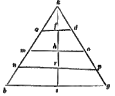
scilicet quadrilatera .abcd. et .afgd., cum tractabimus de diuisione quadrilaterorum diuersorum laterum. Et postquam perduximus diuisionem trium equalium portionum super tertias partes laterum, et super unumquemque angulorum poterimus, per ea que dicta sunt superius, a similibus quadrilateribus tertiam partem, uel quamcumque partem uoluerimus abscidere per lineam egredientem á puncto dato extra uel infra figuram: uel super unum ex lateribus eius; unde qualiter proportionaliter in tres diuersas partes diuidi debeant, demonstremus.
ADIACEAT Rursus quadrilaterum .abgd. caput abscisum; et data proportio sit .ez. it.; uolumus ergo quadrilaterum .ag. diuidere in tres partes á lineis equidistantibus sue basi, quarum prima ad secundam sit sicut .ez. ad .zi., et secunda ad tertiam sicut .zi. ad .it. Perducantur primum recte .ba. et .gd. in puncto .k.; et sit proportio quadrati linee .bk. ad quadratum linee .ak. sicut .tl. ad .el. Deinde ponam quadratum linee .bk. ad quadratum linee .km. sicut .tl. ad .lz. Post hec ponam quadratum linee .bk. ad quadratum linee .kn. sicut .tl. ad .il.; et per puncta .m.n. protraham rectas .mo. np. equidistantes basi .bg.; et inuenies, per ea que dicta sunt superius, quadrilaterum .ao. ad quadrilaterum .mp. esse sicut .ez. ad .zi.; et quadrilaterum .mp. ad quadrilaterum .ng. esse sicut .zi. ad .it. Sint latera quadrilateri .abgd. ut dictum est in suprascripta figura; et extrahatur .ad. ex .bg., scilicet .6. de .24., remanebunt .18.; et erit sicut .18. ad .6., ita .ba. ad .ak.; quare .ak. est .5.: tota uero .bk. est .20., cuius quadratum ad quadratum linee .ak. est sicut .16. ad .1. Quare ponam, lineam .tl. esse .16.; et .el. ponam .1., remanebunt .15. pro .et., que iacet diuisa in proportionibus datis .ez. it. Quare ponamus .ez. .4., et .zi. .5., et .it. .6.; et erit sicut .4. ad .5., ita .ez. ad .zi.; et sicut .5. ad .6., ita .zi. ad .it.; et hec sint proportiones date: et quia est sicut quadratum linee .bk. ad quadratum linee .mk., ita .tl. ad .lz.: fuit etiam sicut quadratum linee .bk. ad quadratum linee .ak., ita .tl. ad .el.: permutatim ergo sicut .le. ad .lz., ita quadratum linee .ak. ad quadratum linee .mk.: est enim .zl. quintuplum ex .el.: quare quadratum linee .mk. est quintuplum quadrati linee .ak.; ergo quadratum linee .mk. est .125. Similiter erit sicut .il. ad .el., hoc .10. ad .1., ita quadratum linee .nk. est ad quadratum linee .ak.; ergo quadratum linee .nk. est .250. Et quadratum linee .np. est similiter decuplum ex quadrato linee .ad.: quare quadratum linee .np. est .360. Item quia quadratum linee .mk. est quintuplum quadrati .ak., erit et .mo. quadratum quintuplum quadrati .ad.; ergo quadratum linee .mo. est 180. Inuenies etiam, cathetum .ks. esse .16.; cum de quadrato linee .bk. auferatur quadratum linee .bs., remaneant .256. pro quadrato linee .ks.: et quia .ka. est quarta ex .bk., et .fk. erit quarta ex .ks.; quare .kf. est .4., cuius quadratum est .16.; et quintuplum eius, scilicet .80., est quadratum catheti .kh., cuius duplum est quadratum linee .kr., scilicet 160. Vnde si multiplicauerimus .kh. dimidium in .mo., ueniet pro embado trianguli .kmo. radix de 3600.; quare trigonum .kmo. est 60: de quibus si auferatur trigonum .kad., quod est 12, remanebunt .48. pro quadrilatero .ao. Rursus si multiplicauerimus quartam quadrati .kr., scilicet 40., per quadratum linee .np., scilicet per 360., uenient .14400., quorum radix, scilicet .120., habentur pro embado trianguli .knp.; de quo si auferamus triangulum .kmo., qui est .60., remanebunt .60. pro embado quadrilateri .mp.
f. 0145 · p. 138

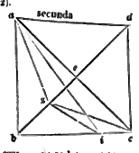

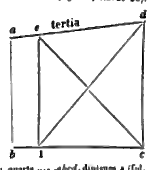

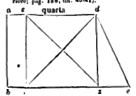
Residuum uero quod restat ex toto quadrilatero .ag., scilicet .72., habentur pro quadrilatero .ng. Est enim proportio de .48. ad .60. sicut .4. ad .5., hoc est sicut .ez. ad .zi.; et proportio de .60. ad .72. est sicut .5. ad .6., hoc est sicut .zi. ad .it., ut oportet. Possumus enim reducere cum equidistantibus has diuisiones á tribus punctis ubilibet datis super lineam .ba.: et si diuiserimus lineam .ad. in datis quibuslibet proportionibus, et in eisdem diuiserimus latus .bg.; et in puncta ipsarum proportionum lineas copulauerimus, rederetur utique quadrilaterum .abgd. in ipsis proportionibus diuisum; que diuisiones reducemus etiam in puncta angulorum per ea que dicta sunt.
Incipit de diuisione quadrilaterorum diuersilaterum.
PRIMVM quidem demonstrare uolo quo modo diuidatur quadrilaterum diuersilaterum in duo equa ab angulo dato. Esto quadrilaterum .abcd., quod diuidere uolo in duo equa ab .a. angulo dato: protraham primum dyametrum .bd. subtendentem angulum .bad.; et secabo ipsum á dyametro .ac. super punctum .e.; recte quidem .be. et .ed. aut sunt equales, aut non. Sint primum equales: et quoniam equalis est recta .be. recte .ed., equale erit trigonum .abe. trigono .ade., nec non et trigonum .ebc. trigono .ecd. est equale; quare totum trigonum .abc. toti trigono .acd. iacet equale. Diuisum est ergo quadrilaterum .abcd. in duo equa á dyametro .ac. egrediente ab angulo dato; quod oportebat facere. Sed non sit recta .be. equalis recte .ed. Sed iaceat .bz. equalis recte .zd.; et protraham rectam .zi. equidistantem dyametro .ac., ut in hac secunda figura cernitur; et copulabo rectam .ai. Dico iterum, quadrilaterum .abcd. diuisum esse in duas equas portiones á linea .ai. egrediente ab angulo .a. dato, que sunt trigonum .abi., et quadrilaterum .aicd.; quod sic probatur: copulabo rectas .az. et .cz., et erunt trigona .azd. et .dzc. equalia trigonis .abz. et .bzc.; quare quadrilaterum .azcd. dimidium est quadrilateri .abcd.: et quia trigona .aci. et .acz. sunt super basim .ac.; et inter equidistantes .ac. et .zi. sibi inuicem sunt equalia; comuniter si addatur trigonum .acd., erit quadrilaterum .aicd. equale quadrilatero .azcd. Sed quadrilaterum .azcd. dimidium est quadrilateri .abcd.; ergo et quadrilaterum .aicd. dimidium est quadrilateri .abcd., ut oportet. Rvrsvs si á puncto dato super unum ex lateribus quadrilaterum aliquod in duo equa diuidere uis, ut quadrilaterum .ac., quod diuidere uolo á puncto dato .e. super latus .ad. Diuidam primum quadrilaterum .ac. in duo equa ab angulo .d.; et sit recta .dt. diuidens ipsum; et copulabo .et.: recta quidem .et. aut equidistans est recte .dc., aut non. Sint primum recte .et. et .cd. equidistantes, ut in tertia ponitur figura; et copuletur recta .ec. Dico siquidem, quadrilaterum .ac. in duo equa diuisum esse á linea .ec. egrediente á puncto dato .e. Quod sic probatur. Quia equidistantes sunt recte .et. et .cd., erunt et trigona .ecd. et .tcd. sibi inuicem equalia. Sed trigonum .tcd. dimidium est quadrilateri .ac.; quare et trigonum .ecd. dimidium est quadrilateri .ac.: diuisum est ergo quadrilaterum .ac. in duo equa á dato puncto .e.; quod oportebat facere. Sed non sit equidistans recta .et. recte .dc.
Ponam rectam .dz. equidistantem recte .et.; et copulabo rectam .ez., ut in quarta figura demonstratur; et erit quadrilaterum .abcd. diuisum in duo equa á linea .ez. Quod sic probatur. Sunt enim trigona .dze. et .dzt. sibi inuicem equalia, cum sint super eandem basim, et in eisdem equidistantibus; quibus si addatur in comune
f. 0146 · p. 139
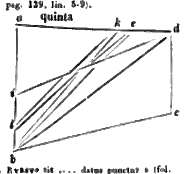


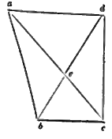
trigonum .dcz., erunt quadrilaterum .ezcd. equale triangulo .dct., scilicet dimidio totius quadrilateri .ac. Et notandum, quod si dyameter .bd. diuidat quadrilaterum .ac. in duo equa, peruenient similiter ea que diximus in his duabus figuris. Sed si diuisio ceciderit super latus .ab., ut recta .di., que sit diuidens quadrilaterum .abcd. in duo equa, aliter operari oportet. Diuidam quadrilaterum .ac. ab angulo .b. cum recta .bk.; et tunc si .k. fuerit datus punctus super latus .ad., á quo egredi oporteat recta diuidens quadrilaterum .ac. in duo equa, recta erit ipsa linea .kb. Sed si .k. non fuerit datus punctus, erit tunc datus punctus inter .k. et .d., aut inter .k. et .a.: sit primum datus punctus .e. inter .d.k.; et copuletur recta .be.; et per punctum .k. protraham rectam .kl. equidistantem recte .eb., et copulabitur recta .el., que diuidet quadrilaterum .ac. in duo equa; et probabitur ordine supradicto.
Rvrsvs sit datus punctus .e. inter .a. et .k., copulabitur similiter recta .eb.; et per punctum .k. ducatur equidistans recta .km., et copulabitur recta .em., que erit diuidens quadrilaterum .ac. in duas sectiones equales, que sunt quadrilatera .am. et .ec., ut in sexta patet figura: quod etiam probabitur ordine supradicto. Adsignabo quidem per modum superius demonstratum quomodo diuidantur diuersilatera quadrilatera á puncto dato super unum ex lateribus ipsius. Esto quadrilaterum .abcd.; et datus punctus sit .e. cadens primum super dimidium lateris .ab.; et ducam á puncto .d. rectam .dz. equidistantem recte .ab.; et diuidam eam in duo equa super punctum .i.; et copulabo rectas .ei. et .ci. et .ec.; et ducam rectam .it. equidistantem recte .ec.; et copulabo rectam .et.; et erit quadrilaterum .ac. in duo equa diuisum á linea .et. Quod sic probatur. Quadrilaterum itaque .az. est duorum laterum equidistantium; et linea .ei. secat equidistantia latera eius, que sunt .ab. et .dz. in duo equa; quare quadrilaterum .ez. est dimidium quadrilateri .az. Similiter quia bases .zi. et .id. sibi inuicem equales sunt, erunt trigona .czi. et .cid. sibi inuicem equalia; quare trigonum .ciz. dimidium est trigoni .cdz.: fuit etiam quadrilaterum .ez. dimidium quadrilateri .az.; ergo quadrilaterum .ebci. dimidium quadrilateri est .ac. Sunt enim et trigona .eci. et .ect. sibi inuicem equalia; quibus si addatur in comune triangulum .ebc., erit quadrilaterum .ebct. equale quadrilatero .ebci. Sed quadrilaterum .ebci. dimidium est quadrilateri .ec.; quare et quadrilaterum .bt. dimidium est quadrilateri .ec.; quare quadrilaterum .bt. dimidium est quadrilateri .ac., ut oportet. Quibus ita explicatis poterimus diuidere in duo equa omne quadrilaterum ab omni puncto dato super aliquod ex lateribus ipsius: et si punctus datus fuerit extra uel intus, per quod linea egredi ualeat, que diuidat quadrilaterum in duo equa, poterimus hoc cum operatione filorum subtiliter operari.
Demonstratio qualiter abscidatur á quadrilatero diuersilatero quantacumque pars data ab angulo dato.
ESTO rursus quadrilaterum .abcd., de quo uolo ab angulo .d. abscidere datam partem, que sit tertia. Subtendam quidem angulo .d. dyametrum .ac., et secabo ipsum cum dyametro .db. super punctum .e.; recta quidem .ce. aut tertia pars est dyametri .ac., aut non. Sit primum .ec. tertia pars ex .ac.; abscidet utique dyameter .bd. tertiam partem ex quadrilatero .ac., que est trigonum .bcd. Quod sic probabitur. Quia trigona .dce. et .dca. sunt sub una altitudine, erunt adinuicem sicut bases .ce. ad
f. 0147 · p. 140
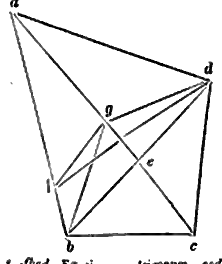


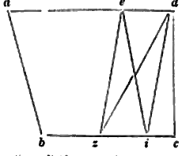


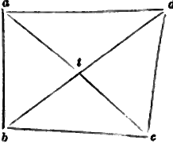
.ca.; propter eadem et trigona .bce. et .abc. sunt in proportione eadem; quare est sicut .ce. ad .ac., ita trigonum .bcd. ad quadrilaterum .ac.: est enim recta .ce. ex .ac. tertia pars; quare et trigonum .bcd. ex quadrilatero .ac. est tertia pars: abscisa est ergo pars data, scilicet tertia, á quadrilatero .ac. egredientem ab angulo .d. dato; quod oportebat facere. Sed non sit .ce. tertia pars ex .ac.; ponam quidem .cg. tertiam ex .ac.; et á puncto .g. dyametro .bd. equidistantem protraham rectam .gf.; et copulabo rectam .fd., que abscidet á quadrilatero .ac. quadrilaterum .fbcd.; quod demonstrabo, tertiam esse ex toto quadrilatero .ac. Quoniam .cg. tertia est ex .ca., erunt trigona .bgc. et .cgd., hoc est quadrilaterum .bcdg., tertia pars trigonorum .abc. et .acd., scilicet quadrilateri .abcd. Cui per ea que dicta sunt demonstrabitur, equale esse quadrilaterum .fbcd. Et si uoluero á quadrilatero dato partem datam á puncto dato super unum ex lateribus abscidere, ut á quadrilatero .abcd., et á puncto .e. super latus .ad. dato; et ponamus, partem datam esse tertiam. Secabo primum á quadrilatero .ac. trigonum .dcz., quod sit tertia pars quadrilateri .abcd.; et copulabo .ez.: recta quidem .ez. aut equidistans erit recte .dc., aut non. Esto primum equidistans ei, tunc copulabo .ec.; et erit trigonum .ecd. equale trigono .zcd.: quare trigonum .ecd. est tertia pars quadrilateri .ac. Sed non sit equidistans recta .ez. recte .dc.; tunc ponam rectam .id. equidistantem recte .ez., et copulabo rectam .ei.; et erit quadrilaterum .eicd. equale trigono .zcd., quod est tertia pars quadrilateri .ac.; quod oportebat facere. Quod probabitur per trigona .zdi. et .edi., que sunt sibi inuicem equalia, cum sint super basim .di., et inter equidistantes .di. et .ez.: quibus cum additur in comune trigonum .dci., ueniet quadrilaterum .eicd. equale trigono .dcz., ut dictum est: remanebit ergo quadrilaterum .abie. due tertie totius quadrilateri .ac.: quod si in duo equa diuiserimus, erit quadrilaterum .ac. in tres equas partes diuisum. Rvrsvs adiaceat quadrilaterum .abcd., cuius latus .ab. sit in tria equa diuisum, que sint .ae. ef. fb.; et uolo per puncta .e.f. quadrilaterum .ac. in tres equas sectiones diuidere. Abscidam primum á quadrilatero .ac. tertiam eius partem per lineam egredientem á puncto .f.; quod etiam faciam per secundum modum, uidelicet ponam .gd. equidistantem recte .ab.; et ponam .gh. tertiam ex .gd.; et copulabo rectas .fh. ch. et .fc.; et protraham rectam .hi. equidistantem recte .fc., et copulabo rectam .fi.; et erit quadrilaterum .fbci. tertia pars quadrilateri .ac. Deinde diuidam quadrilaterum .afid. in duo equa á linea .ek.; et sic erit quadrilaterum .abcd. diuisum in tres equas portiones, que sunt quadrilatera .ak. ei. fc.: quibus omnibus notis poterimus permutare terminos diuisionum á quocumque puncto dato, si supradictarum demonstrationum immemor non extiteris.
ET si quadratum aliquod in duas partes secundum datam portionem, et á dato puncto uel angulo diuidere uis, qualiter hoc fieri debeat, ostendamus. Esto rursus quadrilaterum .abcd.; et data proportio sit .ez. ad .zi.: uolo quidem quadrilaterum .abcd. ab angulo dato .d. secare in proportione quam habet .ez. ad .zi.: protraham primum dyametrum .ac.; et ponam .ct. ad .at. sicut .ez. ad .zi.; et protraham dyametrum .db., qui transeat primum per punctum .t. Dico quod recta .bd. diuidit quadrilaterum .ac. in ea proportione quam habet .ez. ad .zi. Verbi gratia: trigona quidem .dct. et .dta. ad se inuicem sunt sicut bases .ct. ad .ta.: in qua etiam proportione sunt trigona .cbt.
f. 0148 · p. 141
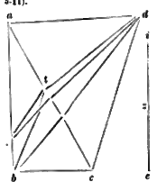


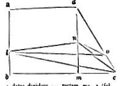


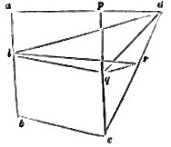
et .tba.; quare est sicut .ct. ad .ta., ita trigonum .dcb. ad trigonum .abd. Sed .ct. ad .ta. est sicut .ez. ad .zi.; quare est sicut .ez. ad .zi., ita trigonum .bdc. ad trigonum .bda. Diuisum est ergo quadrilaterum .ac. in duo secundum proportionem datam, et ab angulo dato; quod oportebat facere. Sed non transeat dyameter .bd. per punctum .t.; oportet ut transeat aut inter .ct., aut inter .ta.: transeat primum inter .ct.: copulabo quidem rectas .bt. et .td.; et erit quadrilaterum .tbcd. ad quadrilaterum .tbad. sicut .ct. ad .ta., hoc est sicut .ez. ad .zi.: et ponam rectam .tk. equidistantem dyametro .bd.; et copulabo rectam .dk., et erit quadrilaterum .kbcd. equale quadrilatero .tbcd.; quod probabitur per ea que dicta sunt; quare erit sicut .ct. ad .ta., hoc est sicut .ez. ad .zi., ita quadrilaterum .kbcd. ad trigonum .dak.: factum est utique propositum. Et si secauerit dyameter .bd. inter .at., protrahetur á puncto .t. recta .tl. equidistans dyametro .bd.; et copulabitur recta .dl.; et erit rursus sicut .ct. ad .ta., hoc est sicut .ez. ad .zi., ita trigonum .dcl. ad quadrilaterum .abld.; quod probabitur per premissa. Et si hoc facere uolumus; super latus .ab. ponam .bl. ad .la. sicut .ez. ad .zi.; et producam .dm. equidistantem recte .ab.; et sit .mn. ad .nd. sicut .bl. ad .la.; et copulabo rectas .ln. et .nc. et .lc.; et ponam .no. equidistantem .lc.; et copulabo .ol.; et erit quadrilaterum .ob. ad quadrilaterum .oa. sicut .bl. ad .la., hoc est sicut .ez. ad .zi.; quod etiam probabitur per premissa: et si á puncto .l. equidistans linea non ceciderit infra quadrilaterum .ac., protraham lineam .cp. equidistantem linee .ab.; et ponam .cq. ad .qp. sicut .bl. ad .la.; et copulabo rectam .lq. et .dq. et .ld.; et per punctum .q. ponam rectam .qr. equidistantem linee .dl.; et copulabo rectam .lr.; et erit quadrilaterum .lbcr. ad quadrilaterum .alrd. sicut .bl. ad .la., hoc est sicut .ez. ad .zi.; quod probabitur per premissa.
VERVM si quadrilaterum aliquod in plures partes, et in proportiones datas diuidere uis, qualiter hoc fieri debeat, ostendamus. Adiaceat quadrilaterum .abcd.; et in ipso protrahatur recta .dg. equidistans lateri .ab.; et proportiones date sint .ez. it.: in quibus proportionibus diuidam latus .ba. in puncta .k.l., hoc est sicut .ez. ad .zi., ita .bk. ad .kl.; et sicut .zi. ad .it., ita .kl. ad .la.: in quibus etiam proportionibus diuidam rectam .dg. super puncta .m.n.; et copulabo rectas .km. ln. cm. et .cn. et .ck. et .cl.; et per punctum .m. ducam rectam .mo. equidistantem recte .kc.; et per punctum .n. ducam rectam .np. equidistantem recte .cl.; et copulabo rectas .ko. et .lp., que diuidunt totum quadrilaterum .ac. in proportiones datas. Quod sic probatur. Quia est sicut .bk. ad .kl., ita .gm. ad .mn.; et sicut .kl. ad .la., ita .mn. ad .nd. Erit sicut .bk. ad .ka., ita .gm. ad .md.; quare erit sicut .gm.
f. 0149 · p. 142
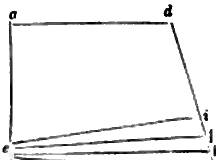

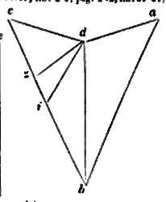

ad .md., ita quadrilaterum .gk. ad quadrilaterum .ma.: est etiam sicut .gm. ad .md., ita trigonum .gcm. ad trigonum .cmd.; quare coniunctim erit sicut .gm. ad .md., ita quadrilaterum .kbcm. ad penthagonum .akmcd.: sed quadrilatero .kbcm. equale est quadrilaterum .bo.; quare est sicut quadrilaterum .kbcm. ad penthagonum .akmcd., ita quadrilaterum .bo. ad quadrilaterum .ao. Sed sicut .gm. ad .md., ita .ez. ad .zt. Similiter ostendetur, quadrilaterum .lo. ad quadrilaterum .ld. esse sicut .mn. ad .nd., hoc est sicut .zi. ad .it.; ergo est sicut .ez. ad .zi., ita quadrilaterum .bo. ad quadrilaterum .kp.; et sicut .zi. ad .it., ita .kp. quadrilaterum ad quadrilaterum .ld. Erit ergo quadrilaterum .ac. diuisum in proportiones datas, ut oportebat facere. Et ut hec que necessaria sunt in diuidendis campis perfecte in hoc opere proponantur, quemdam uulgarem modum proponimus. Vt si quadrilaterum .abgd. super dimidium lateris .ab. diuidere uolumus in duo equa, ponam .ef. in medio inter .ab. et .gd.; et copulabo rectam .ef., que diuidet quadrilaterum .ag. in duo equa, si equidistantia fuerint sibi inuicem latera .ab. et .dg.: que si equidistantia non fuerint, erunt utique quadrilatera .eg. et .af. inequalia: mensurabo quidem ea inuestigando embada eorum; et sit quadrilaterum .af. minus quadrilatero .ge. secundum quantitatem perticarum numeri .h.; et inueniam longitudinem catheti cadentis ab .e. super rectam .gd., qui sit recta .ei., numerum: diuidam siquidem .h. per .ei., et proueniat ex diuisione quantitas .kf.; et copulabo rectam .ek.: dico siquidem, quadrilaterum .ag. diuisum esse in duo equa á linea .ek. Quod sic probatur: ponam .lk. equalem .kf.; et copulabo .el.; et erit embadum trigoni .efl. equale superficiei catheti .ei. in lineam .fk.; ergo embadum trigoni .efl. prouenit ex ducto .ei. in lineam .kf.: sed ex .ei. in .kf. prouenerit numerus .h., in quo quadrilaterum .ebgf. superhabundat quadrilaterum .af.; quare quadrilaterum .ebgf. superhabundat quadrilaterum .af. secundum quantitatem trigoni .elf.: quare si auferatur trigonum .elf. ex quadrilatero .bf., remanebit quadrilaterum .bl. equale quadrilatero .af. Sunt enim et trigona .ekf. et .ekl. sibi inuicem equalia, cum sint super equas bases, et sub eadem altitudine. Et quoniam cum equalibus equalia addantur, que proueniunt sunt equalia. Equalia erunt quadrilatera .kb. et .ak. sibi inuicem, ut prediximus. Eodemque modo diuidemus in duo equa quadrilatera similia quadrilatero sequenti .abcd., quod habet formam fulminis, cuius dyametra minime se se secare possunt: producam primum dyametrum .db.; et inueniam embada trigonorum .abd. et .cbd.: que si equalia inuenero, erit utique quadrilaterum .abcd. in duo equa diuisum á linea .bd.: que si inequalia fuerint, erit embadum unius eorum maius. Esto quidem maius trigoni .cbd. secundum quantitatem numeri .e.; protraham quidem á puncto .d. super latus .cb. cathetum .dz.; et ponam superficiem .dz. in .bi. equalem numero .e.; et copulabo rectam .di., que diuidet quadrilaterum .abcd. in duas portiones equales, que sunt trigonum .cdi., et quadrilaterum .abid.; quod probabitur per ea que diximus in precedenti figura.
SED si geometrice operari uolumus, copulabo rectam .ac., ut in hac alia cernitur figura; et diuidam eam super punctum .e. in duo equa, et copulabo rectam .be. Recta uero .be. aut transibit per punctum .d., aut non: transeat primum per punctum .d. Dico, quadrilaterum .abcd. diuisum esse in duo equa á linea .db.; quod sic probatur: trigona quidem .abe. et .ebc. sibi inuicem sunt equalia, nec non et trigonum .aed. equale est trigono .ced. Vnde si ab equalibus equalia auferamus, que remanebunt,
f. 0150 · p. 143

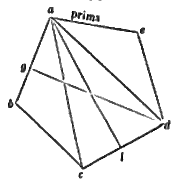


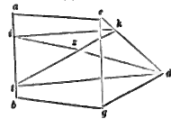
erunt equalia; ergo extracto trigono .aed. ex trigono .aeb., et trigonum .ced. ex trigono .ceb., remanebunt trigona .abd. et .cdb. sibi inuicem equalia, ut predixi. Sed non transeat recta .eb. per punctum .d.; secabit ergo unum ex lateribus .ad. uel .cd.: secet quidem latus .cd. super punctum .z.; et copuletur recta .ed.; et iaceat .dz. ad .zi. sicut .bz. ad .ze.; et copuletur recta .bi. Dico si quidem, quadrilaterum .abcd. diuisum esse in duo equa á linea .bi.; quod sic probatur. Quoniam trigonum .ezd. et .biz. circa equales angulos, qui ad .z., contraria patiuntur latera, hoc est quod sunt mutue proportionis, ipsa trigona sibi inuicem sunt equalia. Est enim sicut .bz. ad .ze., ita .dz. ad .zi. Comune adiungatur trigonum .cez., erunt duo trigona .cez. et .biz. equalia trigono .ecd.; sed trigono .ecd. equale est trigonum .aed.; ergo trigona .cez. et .izb. equalia sunt trigono .ead.: sunt enim et trigona .eab. et .ebc. sibi inuicem equalia: quare si ab equalibus auferantur equalia, que remanebunt erunt equalia; auferatur quidem á trigono .eab. trigonum .ead., et á trigono .ebc. auferantur trigona .cez. et .izb., remanebunt quadrilaterum .abzd. et trigonum .edz. equalia trigono .cib.: sed trigono .edz. equale est trigonum .biz.; quare quadrilaterum .abid. equale est trigono .cbi., ut predixi.
Incipit de diuisione figurarum plurium laterum.
SI Penthagonum equilaterum et equiangulum ab aliquo angulorum dato in duo equa secare desideras, lineam ab ipso angulo super dimidium lateris sibi oppositi protrahe. Verbi gratia: sit datum penthagonum equilaterum et equiangulum .abcde.; et datus angulus sit .a.; super dimidium quidem lateris .cd. lineam .af. protrahe. Dico, penthagonum .abcde. diuisum esse in duo equa á linea .af.; quod sic probatur: copulabo rectas .ac. et .ad., et erunt trigona .abc. et .aed. sibi inuicem equalia et equiangula. Sunt enim et trigona .afc. et .afd. equalia; quare quadrilaterum .abcf. equale est quadrilatero .aedf.: diuisum est ergo penthagonum .abcde. ab angulo .a. dato á linea .af.; quod oportebat facere. Ex hoc ergo manifestum est, quod cum in penthagono equilatero et equiangulo super dimidium cuiuslibet lateris dirigatur linea ad angulum respicientem ipsum latus, quod ipsa linea diuidet penthagonum in duo equa. Et si á puncto .g. dato super latus .ab. eundem penthagonum in duo equa diuidere uis, considera si punctus .g. erit in medio lateris .ab.; quia tunc protrahenda erit recta á puncto dato .g. ad angulum .d.; et erit recta .gd. diuidens penthagonum .abcde. in duo equa. Et si punctus datus fuerit inter .a.g. puncta, qui sit .h., ut in secunda cernitur figura; tunc diuidam penthagonum á linea .af. in duo equa, et copulabo rectam .hf., cui protraham equidistantem lineam .ai.; et copulabo rectam .hi., que diuidit penthagonum .abcde. in duo equa; quod sic probatur. Quoniam trigona .hfa. et .hfi. sunt inter duas equidistantes, et super eandem basim .hf.; ideo sibi inuicem sunt equalia: si comuniter addatur quadrilaterum .hbcf., erit quadrilaterum .hbci. equale quadrilatero .abcf.: sed quadrilaterum .abcf. est dimidium penthagoni .abcde.; quare et quadrilaterum .hbci. erit dimidium penthagoni .abcde. Sed non sit penthagonum datum equilaterum et equiangulum, ut penthagonum .abgde.; et uolo ipsum diuidere in duo equa; producam rectam .eg.; et super dimidium ipsius ponam punctum .z., á quo diuidam quadrilaterum .abge. in duo equa á linea .zi.; et copulabo rectam .zd., que etiam diuidit trigonum .egd. in duo equa: recta quidem .zd. aut est
f. 0151 · p. 144


in directo recte .zi., aut non: esto primum una earum in directo alterius, ut in hac tertia cernitur figura: et erit manifestum quod linea .id. diuidet penthagonum .abgde. in duo equa: quod etiam si á puncto .t. dato super rectam .ab. ipsum penthagonum diuidere uis, copulabo rectam .td.; et ipsi ponam ei equidistantem rectam .ik., et copulabitur .tk.; que etiam diuidet idem penthagonum in duo equa: demonstratio est eadem ut supra. Sed non sit recta .zd. in directo .zi.; copulabo quidem rectam .id.; et ponam ei equidistantem rectam .zl.; et copulabo rectam .il.; que etiam diuidet penthagonum .abgde. in duo equa. Probatio. Recte quidem .iz. et .zd. diuidunt penthagonum .abgde. in duas portiones equales: et sunt trigona .idz. et .idl. sibi inuicem equalia: quibus si addatur quadrilaterum .ibgd., erit penthagonum .ibgdl. equale penthagono .ibgdz., hoc est dimidio penthagoni .abgde., ut oportet: et sic secundum hunc modum possumus perducere diuisionem super omne latus penthagoni, et ab omni puncto dato super ipsum; nec non et poterimus in plures partes diuidere cum per ea que dicta sunt. Nam si rectam .eg. in tres equas partes diuiserimus; et per puncta sectionum in equas partes diuiserimus quadrilaterum .abge., et trigonum .egd.; et deinceps processerimus ordine demonstrato, habebimus optatum. Et si penthagonum habuerit formam mitre, ut penthagonum .bcdef., protrahemus ad rectos angulos super latus .cd. lineam .fa.; et inuestigabo embadum quadrilateri .bcaf., nec non et quadrilateri .fade.: que si inuenero esse equalia, erit utique penthagonum .bcdef. diuisum in duo equa á linea .af. Si autem embada eorum inequalia fuerint, sit maius eorum embadum quadrilateri .ae. secundum quantitatem numeri .g.; et ponam superficiem .fa. in .az. equalem numero .g.; et copulabo rectam .fz.; et erit embadum trigoni .faz. quantitas medietatis numeri .g.: quare linea .fz. diuidit penthagonum .bcdef. in duo quadrilatera equalia, que sunt .bczf. et .fzde.; et hoc fit secundum uulgarem modum. SED si geometrice hoc operari uolumus, copulabimus .be., et diuidemus .be. in duo equa super punctum .i., ut in hac alia cernitur figura: et diuidemus quadrilaterum .bcde. in duo equa á linea .ik.; que si transierit per punctum .f., diuiditur per lineam .fk. penthagonum .bcdef. in duo equa; quia si ex quadrato .bcki. auferamus triangulum .bif.; et á quadrilatero .ikde. auferamus triangulum .ief., remanebunt quadrilatera .fc. et .fd. sibi inuicem equalia.
Et si recta .ik. secat latus .ef. super punctum .l., ut in hac ultima figura cernitur. Ponam .ml. ad .lf. sicut .il. ad .lk.; et copulabo rectam .km., que diuidet penthagonum .bcdef. in duas sectiones equales, quarum una erit quadrilaterum .mkde., alia penthagonum .bckmf.: probatio: copulabo rectam .if., et erunt trigona .ifl. et .kml. sibi inuicem equalia, cum sit proportio .ml. ad .fl. sicut .il. ad .lk.: quare trigonum .ife. equale est trigonis .ile. et .klm.: est enim et trigono .ief. equale trigonum .bif.; quare trigonum .bif. equale est trigonis .iel. et .klm.: unde si á quadrilatero .bcki. auferamus trigonum .bfi.; et á quadrilatero .ikde. auferamus trigona .ile. et .klm., remanebunt quadrilaterum .bckl., et trigonum .ifl. equalia quadrilatero .kdem.: est enim trigonum .klm. equale trigono .ilf.; quare penthagonum .bckmf. equale est quadrilatero .mkde., ut predixi: quam etiam diuisionem perducemus á puncto .f., si copulauerimus .fk., et ponemus .ei. equidistantem lineam .mn., et copulauerimus .fn.; et sic erunt
f. 0152 · p. 145

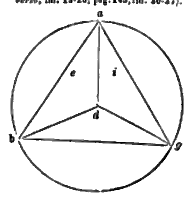
quadrilatera .bcnf. et .fnde. sibi inuicem equalia: quod etiam penthagonum si in tres equas partes diuidere uolumus, ascidemus á quadrilatero .bcnf. tertiam partem cum linea .op.; et á quadrilatero .fnde. secabimus similiter tertiam partem cum linea .qd.; et erit penthagonum .bcdef. diuisum in tres equas partes, quarum una est quadrilaterum .bcpo., secunda penthagonum .opdqf., tertia trigonum .qde. Et notandum quod si exagonum diuidere uolumus, diuidemus ipsum in duo quadrilatera á linea protracta in ipso, que ponat tria latera eius in unam partem, et reliqua tria in aliam; et super dimidium ipsius linee ponemus punctum, á quo diuidemus utrumque quadrilaterum in duo equa; ut si in exagono .abcdef. protraxerimus lineam .ad., diuidet ipsum exagonum in duo quadrilatera, que sunt .abcd. et .adef.: unde si super dimidium linee .ae. posueramus punctum .g.; et ab ipso protraxerimus rectas diuidentes utrumque quadrilaterum in duo equa; et deinceps immitati fuerimus ea que dicta sunt superius, poterimus ipsum exagonum cum linea una in duo equa diuidere; nec non et poterimus permutare sectiones ab omni puncto dato super aliquod ex lateribus eius; nec non, si secundum hoc processerimus in reliquis figuris plurium laterum, poterimus ad notitiam diuisionis ipsarum sauissime peruenire.
Incipit de diuisione circulorum, et eorum partium.
SI Circulum aliquem in duo equa secare uolumus, per lineam protractam á puncto dato super periferiam eius, aut extra circulum, ipsum punctum cum centro copula; et ipsam rectam usque ad periferiam ducere studeas; Verbi gratia: Esto datus circulus .abgd.; et extra ipsum sit datus punctus .e., et sit .z. centrum circuli; copulata quidem recta .ez., et emissa usque in punctum .g., erit recta .ag. dyameter circuli .abgd. Nam dyameter circuli est recta per centrum ducta: et in utraque parte periferie terminata. Ducitur quidem recta .ag. per centrum .z.; ergo dyameter est .ag.; quare semicirculus est unaqueque portionum .abg. et .adg.: diuisus est ergo circulus .abgd. á recta protracta á puncto .e. dato extra circulum. Et si infra circulum punctus datus fuerit .i., copulabo rectam .iz., et ducam eam in utramque partem in puncta .b.d.; et erit recta .bd. dyameter circuli, qui secat circulum .abgd. similiter in duo equa. Et si circulum aliquem in tres partes diuidere uolumus, constituemus in ipsum trigonum equilaterum .a.b.g.; et centrum circuli sit .d.; et copulabimus rectas .da. db. dg., que diuident circulum .abg. in tres equas partes, quarum una est sector .dab., secunda est sector .dbg., tertia quoque est sector .dga. Verbi gratia: quia equales sunt recte .ab. bg. ga., equales erunt arcus .ab. bg. ga.; quia equales recte in equalibus circulis equales arcus subtendunt. Sunt enim á centro sibi inuicem equales recte .da. db. dg.; et anguli qui ad .d. sibi inuicem sunt equales: quare sectiones .e.z.i. sibi inuicem sunt equales: diuisus est ergo circulus .abg. in tres sectiones equales, ut oportet. Et si in plures partes ipsum á centro diuidere uis, in tot equales partes periferiam ipsius circuli diuide, quot partes ex eo facere uolueris; et puncta ipsarum sectionum cum centro copulare studeas, et peruenies ad optata.
Si uero circulum per lineas equidistantes in tria diuidere uolumus, hoc sine labore maximo fieri non posse cognosce; tamen qualiter hoc secundum propinquitatem fieri debeat, demonstrabo. Ponam primum in circulo .abg. rectam .ag., que sit latus trigoni equilateri cadentis in ipso; quare periferia .ag. erit tertia pars periferie totius circuli
f. 0153 · p. 146


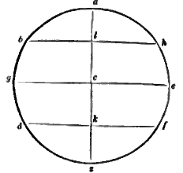

.abg.; et ponam á centro .d. rectam .db. equidistantem recte .ag., et copulabo rectas .da. dg. ab. et .bg., et erunt trigona .dag. et .bag. sibi inuicem equalia: quibus si addatur augmentum comune portionem circuli contempta sub recta .ag., et arcu .ag.; erit figura contempta sub rectis .ba. et .bg., et arcu .ag. equalis sectori .dag., qui est tertia pars circuli; quare figura contenta sub rectis .ba. et .bg., et arcu .ag. tertia pars est circuli .abg.: cui addatur portio circuli contenta sub recta .bg., et arcu .bg., erit portio circuli contenta sub recta .ab., et periferia .agb. plus tertia partis circuli .abg. secundum quantitatem portionis .bg.: quare inueniam embadum portionis contente sub recta .bg., et periferia .bg.; et diuidam duplum super rectam .ab., et parum plus ex hoc quod prouenerit minuam ex periferia .bg.; et sit illud arcus .be.; et copulabo rectam .ae., et erit secundum propinquitatem portio .age. tertia pars circuli .abg. De inde super rectam .ae. protraham á centro .d. cathetum .dz., et perducam eam in .i., et sit recta .di. equalis recte .dz.; et per punctum .i. protraham rectam .tk. equidistantem recte .ae.; et erit portio .tkl. equalis portioni .abe. Reliquum uero, quod continetur sub rectis .ae. et .tk., et arcubus .ke. et .at., erit alia tertia pars; quod sic probatur. Ducam á puncto .e. super lineam .ab. cathetum .ec.; et sit illud quod prouenit ex diuisione dupli embadi portionis .bg. in rectam .ab.; et copulabitur recta .eb., et erit trigonum .abe. equalis portionis circuli .bg.: quare cum auferatur trigonum .abe. ex circuli portione .agb., remanebit portio .aeg. tertia pars circuli .abg.: et quia recte .tk. et .ae. equidistantes sunt, et equaliter distant á centro, sibi inuicem equales sunt. Et quoniam equalis est recta .tk. recte .ae., ipse due recte ab eodem circulo equales sectiones auferunt, ut in tertio libro Evclidis panditur: equalis est ergo portio .tkl. portioni .aeg.; quare tertia pars est sectio .tkl.; et residuum uero quod continetur inter equidistantes .tk. et .ae. rectas, et arcus .ek. et .at. erit reliqua tertia pars, ut oportet. Et ut hec prontius haberentur, quam subtilius potui, inuestigaui proportionem recte .dz. ad semidyametrum circuli; et inueni, eam esse secundum propinquitatem sicut .9. ad .34.: unde cum aliquem circulum in tres equas partes cum equidistantibus rectis diuidere uoluerimus, dyametrum circuli inuenire studebimus; et eius medietas in proportione dicta, cum ab utraque parte circuli centri diuisa fuerit, et per sectiones proportionum rectas ad rectos angulos duxerimus, diuidemus utique circulum in tres equas partes. Similiter si circulum .abgde. in quatuor equas partes diuidere uolumus, dyametros .az. et .ge. super centrum circuli .c. ad rectos angulos secare faciam; deinde semidyametrum .cz. super punctum .k. diuidam; et sit proportio .ck. ad .cz. sicut .611. ad .1512.: et ponam rectam .cl. equalem recte .ck.; et per puncta .l.k. producam rectas .bh. et .df. secantes dyametrum .az. ad angulos rectos, erit unusquisque semicirculorum secundum propinquitatem diuisus in duo equa. Et si inter duas equidistantes á dato circulo .abg., cuius centrum sit .d., datam partem, que sit tertia, auferre uolumus, ponam rectam .ab. latus trianguli equilateri cadentis in circulo .abg.; et per centrum .d. ponam ei equidistantem rectam .dg., et copulabo rectam .bg.; et diuidam periferiam .ab. in duo equa super punctum .e., et protraham rectam .ez. equidistantem recte .bg. Dico quod figura contenta sub rectis .bg. et .ez., et arcubus .eb. et .gz. tertia pars est circuli .abg. Probatio: protraham rectas .da. et .db. et .ag.; et erunt trigona
f. 0154 · p. 147
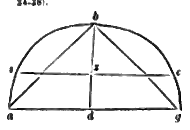
.gab. et .dab. equalia: quibus cum in comune additur portio .abe., erit figura contenta sub rectis .ga. et .gb., et arcu .aeb. equalis sectori .daeb., qui est tertia pars circuli .abg.; ergo figura contenta sub rectis .ga. et .gb., et arcu .aeb. est tertia pars circuli .abg.: et quia recte .bg. et .ez. equidistantes sunt, erunt arcus .eb. et .gz. equales. Sed arcui .eb. equalis est arcus .ae.; ergo et arcus .ae. equalis est arcui .gz.: comune addatur arcus .bg., erit quidem arcus .aebg. equalis arcui .ebgz.; quare portio circuli .ezgb. equalis est portioni circuli .agbe.: comuniter auferatur portio contenta sub recta .bg., et arcu .gb., remanebit figura contenta sub rectis .gb. et .ez., et arcubus .be. et .gz. equalis tertie parti circuli, scilicet figure contente sub rectis .ga. et .gb., et arcu .aeb.; quod oportebat ostendere. Ostendam rursus quomodo auferatur á circulo dato qualiscunque pars data per circulum equidistantem ei. Sit datus circulus .abcd. super centrum .e., uolo á circulo .abcd. auferre partem datam, que sit tertia per circulum equidistantem ei: protraham dyametrum .ag.; et ponam quadratum linee .ae. triplum quadrati linee .ez.; et centro quidem .e. spatio .ez. circinabo circulum .zit. Dico: á dato circulo .abcd. secta est tertia eius, que est circulus .zit. Probatio. Quoniam .ea. recta dimidium est dyametri .ag., erit quadratum dyametri .ag. quadruplum ex quadrato linee .ae.: propter eandem ergo et quadratum linee .zt. est quadruplum quadrati linee .ez.; quare est sicut quadratum linee .ea. ad quadratum linee .ez., ita quadratum dyametri .ag. ad quadratum dyametri .tz.: sed sicut quadratum dyametri .ag. ad quadratum dyametri .tz., ita circulus .abcd. ad circulum .zit.: sunt enim circuli ad se inuicem sicuti ad quadrata dyametrorum; ut in duodecimo Evclidis monstratum est: quare erit sicut quadratum linee .ea. ad quadratum linee .ez., ita circulus .abcd. ad circulum .zit.: est enim quadratum linee .ea. triplum quadrati linee .ez.; quare circulus .abcd. triplus est circuli .zit.; et sunt ambo circuli equidistantes, cum unum habeant centrum. Secta est ergo á circulo .abcd. tertia eius pars per circulum .zit. equidistantem ei; quod oportebat facere.
Incipit De diuisione portionum circulorum.
SI Semicirculum .abg. in duo equa secare uis; diuide rectam .ag. in duo equa super punctum .d.; et a puncto .d. ad rectos angulos rectam protrahe .db. Dico, diuisum esse semicirculum .abg. in duo equa á recta .db. Probatio: productis rectis .ba. et .bg., erunt trigona .bdg. et .bda. sibi inuicem equalia; est enim latus .ad. lateri .dg. equale: et in comuni iacet recta .bd.; nec non et anguli ad .d. sunt recti; quare recta .bg. equalis est recte .ba.; equales uero recte equales sectiones auferunt; quare sectio .bg. sectioni .ba. equalis est. Sunt et trigona .bdg. et .bda. equalia; quare sectio .bdai. sectioni .bdge. est equalis: diuisum est ergo semicirculum .abgd. in duo equa; quod oportebat facere. Et si ipsum cum recta equidistante basi .ag. diuidere uis; semidyametrum .bd. super punctum .z. diuide: et sit .dz. ad .zb. sicut .611. ad .1512.: et per punctum .z. protrahe rectam .ei., que diuidet similiter semicirculum .abg. in duo equa; que habentur ex his que diximus in diuisione circuli in quatuor partes. Et si portio circuli, siue sit minor, siue maior semicirculo, in duo equa diuidere uis, simili modo super dimidium corde eius sagittam protrahe: uerbi gratia: sit data portio maior semicirculo .abg.; et super dimidium corde ipsius sagittam .da.
f. 0155 · p. 148


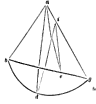
protrahe: et erit portio circuli .abd. equalis portioni .adg.; quod probabitur per ea que dicta sunt in semicirculo: et si á puncto .d. ad rectos angulos protraxerimus rectam .dc. super cordam .bg., diuidetur utique in duo equa portio circuli .bcg., que est minor semicirculo. Rvrsvs si semicirculum .abc. in tria equa diuidere uis, rectam .bc. in duo equa partire super punctum .d.; deinde arcum .bac. in tria equa diuide super puncta .a.g.; et copulabis rectas .da. dg., que diuident semicirculum .abc. in tres equas sectiones. Probatio. Quoniam semicirculus est portio .abc., erit utique punctus .d. centrum circuli, cuius medietas est semicirculus .abc.; quare recte .db. da. dg. dc. sibi inuicem sunt equales: et quia arcus .ba. et .ag. et .gc. sibi inuicem equales sunt, erit sector unaqueque figurarum contentarum sub duabus rectis, et arcu predictis; quare cum sub equalibus rectis, et sub equalibus arcubus sint, ipsos sectores sibi inuicem equales esse necesse est: diuisus est ergo semicirculus in tres sectores equales, que sunt .dab., et .dag., et .dgc.; quod oportebat facere. Et si figuram aliquam contentam sub duabus rectis, et arcu periferie in duo equa diuidere uis, ut trigonum .abdg., cuius duo latera .ab. et .ag. sunt recta; reliquum uero latus .bdg. sit arcus circuli. Copulabo primum rectam .bg., et diuidam ipsam in duo equa super punctum .e., á quo protraham rectam .ae.; deinde super rectam .bg., et á dato puncto in ipsam .e. protraham ad rectos angulos rectam .ed. Recte .ae. et .ed. aut sunt in directo sibi inuicem, aut non: si fuerint in directo, diuisa erit figura .abdg. in duo equa á linea .ad., cum recta .ae. diuidat rectilineum trigonum .abg. in duo equa; et recta .ed. diuidat portionem circuli .bdg. in duo equa. Sed non sit in directo recta .ed. recte .ea., ut in hac alia cernitur figura. Copulabo tunc rectam .ad.; et per punctum .e. protraham rectam .ei. equidistantem recte .ad.; et copulabo rectam .ai., que diuidet totam figuram .abdg. in duo equa. Probatio. Quoniam recte .ad. et .ei. equidistantes sunt, et in eis sunt trigona .dai. et .dea., super basim .da. ipsa trigona sibi inuicem equalia sunt: quibus addita in comuni figura contenta sub rectis .ab. et .ad., et arcu .db., erit figura contenta sub rectis .di. et .ia. et .ab., et arcu .db., equalis figure contente sub rectis .de. et .ea. et .ab., et arcu .bd.; que figura continet dimidium trianguli .abdg., ut oportebat facere.
Explicit distinctio quarta de diuisione camporum inter consortes.